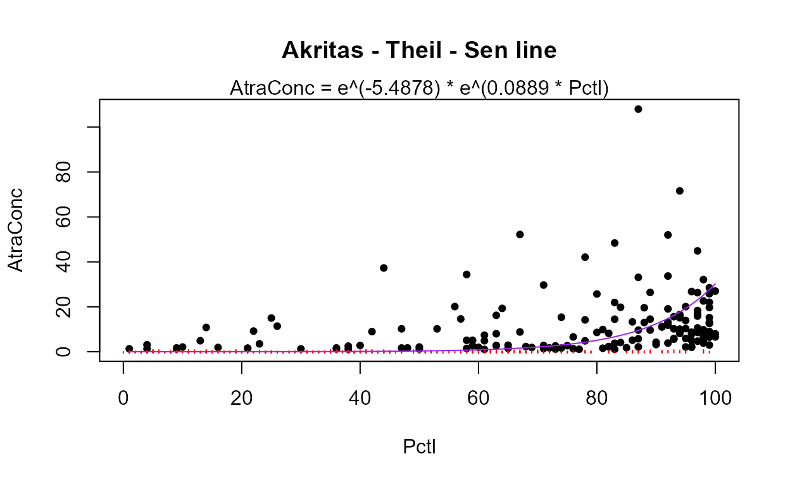
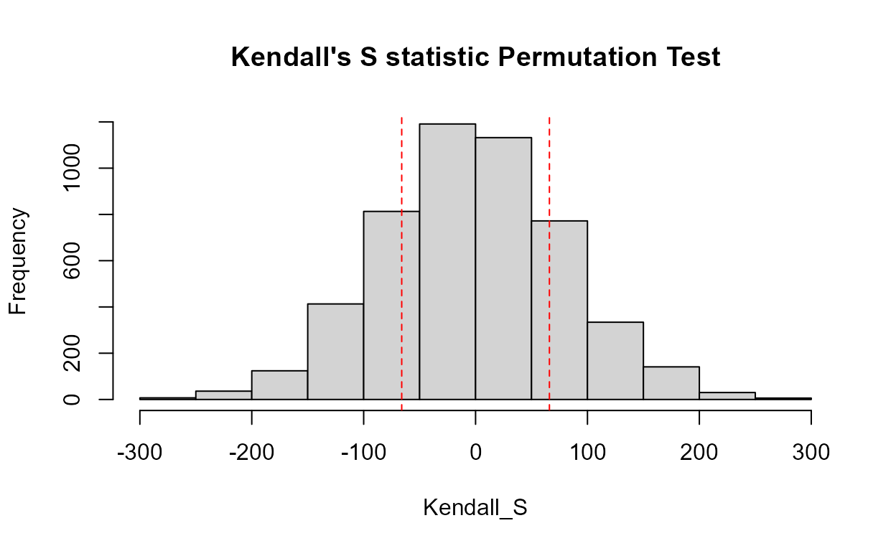
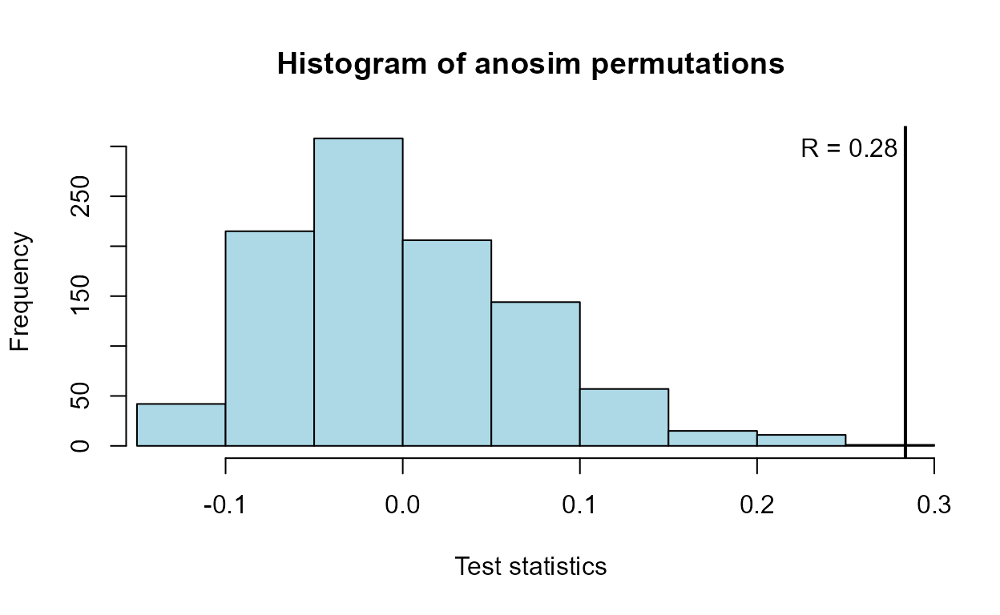

Censored Data Analysis
Dennis Helsel and Paul Julian
Source:vignettes/DataAnalysis.Rmd
DataAnalysis.RmdStart RStudio
Caveat: recently there has been debate on the use and practices surrounding setting a working directory and workflow critiques (see link). For purposes of this vignette/training, we will use setwd() for simplicity. But honestly, do what works and is comfortable for you. Go forth and code!
Set the working directory:
Set the working directory to one in which you will save any worksheets or output. In RStudio you can easily do this using RStudio’s pull-down menu: Session > Set working directory > Choose directory
or
setwd(".../NADA2")if you are using setwd(), for reproducibility it is recommend to use the code above.
Load Packages
Load the packages needed. Install 15 packages: You can either do this manually via the packages tab by checking the boxes next to the package names or via console/R-script using install.packages(...) and library(...).
Here is a trick to use a list of packages combined with a function that will check if the package is installed, if not install it and then load it.
check.packages <- function(pkg){
new.pkg <- pkg[!(pkg %in% installed.packages()[, "Package"])]
if (length(new.pkg))
install.packages(new.pkg, dependencies = TRUE)
sapply(pkg, require, character.only = TRUE)
}
pkg <- c("bestglm","car","cenGAM","EnvStats","fitdistrplus","Kendall",
"mgcv","multcomp","NADA","nlme","perm","rms","survminer",
"vegan","NADA2","bestglm")
check.packages(pkg)Loading libraries using console/R-script
Loading R Format Databases From Packages
Some packages have datasets contained within them. When you load the packages you have access to those datasets. You can type data() to list all datasets available within the R base packages and in the packages you’ve loaded. Once you know the names of the datasets you want to load, use the data (datasetname) command to load the dataset.
data(Golden); # From NADA package
head(Golden,5L)
#> Group Dosage DosageGroup Liver LiverCen Bone BoneCen Brain
#> 1 1 0 Low 0.30164120 FALSE 0.19642727 FALSE 0.3462295
#> 2 1 0 Low 0.13614973 FALSE 0.02902514 FALSE 0.3920635
#> 3 1 0 Low 0.04000000 TRUE 0.03000000 TRUE 0.6950323
#> 4 1 0 Low 0.09892787 FALSE 0.03691224 FALSE 0.1906452
#> 5 1 0 Low 0.04000000 TRUE 0.07664027 FALSE 0.0700000
#> BrainCen Feather FeatherCen Blood BloodCen Kidney KidneyCen
#> 1 FALSE 0.070 TRUE 0.02 TRUE 0.08196248 FALSE
#> 2 FALSE 0.060 TRUE 0.02 TRUE 0.06293103 FALSE
#> 3 FALSE 0.394 FALSE 0.02 TRUE 0.05865103 FALSE
#> 4 FALSE 0.111 FALSE 0.02 TRUE 0.09555085 FALSE
#> 5 TRUE 0.242 FALSE 0.02 TRUE 0.11623897 FALSELoading External Datasets of Various Formats
For purposes of this vignette, we won’t be loading external dataset, but here is a description of how to load data of several formats from external files.
Read in an R-format (.rda) file.
In the Environment tab, click the open folder icon. Go to the directory where the data are located and choose the file name.
console/R-script
dat<-load(".../path/to/data/data.rda")
Read in an excel format (.xlsx/.xls) file.
In the environment tab, click on the Import Data button. Choose the “From Excel” option. Go to the folder where the data file is located and choose the file name. If there are variable names stored as column names, make sure the box next to First Row as Names is checked, and click Import.
console/R-script
There are several R-packages that will read xlsx or xls files into R. Beware some packages have recod limitations.
Read in an csv format (.csv) file.
In the environment tab, click on the Import Data button. Choose the “From Text (base)…” option. Go to the folder containing the file and choose the file name. Make sure the Heading button YES is selected if the first row in the dataset are the variable names (text). Change the na.strings entry to whatever in the dataset represents a missing value (often a blank in Excel). Click the Import button.
console/R-script
dat <- read.csv(".../path/to/data/data.csv")
Read in an txt format (.txt) file.
In the environment tab, click on the Import Data button. Choose the “From Text (base)…” option. Go to the folder containing the data file and choose the file name. Make sure the Heading button YES is selected if the first row in the dataset are the variable names (text). If necessary, change the na.strings entry to whatever in the dataset represents a missing value (often a blank in Excel). Click the Import button.
console/R-script
dat <- read.table(".../path/to/data/data.txt")For other data with specific delimiters (i.e. tab delimited) run ?read.table or ?read.delim for more info.
Plotting Censored Data
Boxplots
Data: Zinc dataset
data(CuZn); # Data from the NADA package
cboxplot(CuZn$Zn,CuZn$ZnCen,CuZn$Zone,minmax = TRUE,Xlab="Zone",Ylab="Zn")
cboxplot(CuZn$Zn,CuZn$ZnCen,CuZn$Zone,LOG=TRUE,Xlab="Zone",Ylab="Zn")Note that without the minmax option, outlier observations such as the one in the Alluvial Fan data, are shown individually.
cboxplot(CuZn$Zn,CuZn$ZnCen,CuZn$Zone,LOG=TRUE,show = TRUE, minmax = TRUE,
Xlab="Zone",Ylab="Zn")The show=TRUE option models the portion of each group’s data below the highest detection limit (the lines in gray) using ROS.
Scatterplots
Data: TCE concentrations in ground water
data(TCEReg); # Data from the NADA package
cenxyplot(TCEReg$PopDensity, 1-TCEReg$PopAbv1, TCEReg$TCEConc, TCEReg$TCECen)
cenxyplot(TCEReg$PopDensity, 1-TCEReg$PopAbv1, TCEReg$TCEConc, TCEReg$TCECen,
xlab="Population Denisty",ylab="TCE Concentration, in ug/L")
cenxyplot(TCEReg$PopDensity, 1-TCEReg$PopAbv1, TCEReg$TCEConc, TCEReg$TCECen,
xlab="Population Denisty",ylab="TCE Concentration, in ug/L",
main = "Your Title Here", log ="y")Cumulative distribution functions (CDFs)
Data: Zinc, Pyrene
# Data already loaded
cen_ecdf(CuZn$Zn, CuZn$ZnCen)
cen_ecdf(CuZn$Zn, CuZn$ZnCen,CuZn$Zone,
Ylab="Zinc Concentration, in ug/L")Compare CDFs
data(ShePyrene); # From the NADA package
cenCompareCdfs(ShePyrene$Pyrene,ShePyrene$PyreneCen)
cenCompareCdfs(ShePyrene$Pyrene,ShePyrene$PyreneCen,dist3 = "weibull")
Probability (Q-Q) Plots: Pyrene data
Data: Pyrene
cenQQ(ShePyrene$Pyrene,ShePyrene$PyreneCen)Compare QQs
cenCompareQQ(ShePyrene$Pyrene,ShePyrene$PyreneCen,Yname="Pyrene",cex=0.75)
#> Best of the three distributions is the lognormalEstimate Descriptive Statistics
Exploring the data
In R, the summary command is used to briefly describe the characteristics of the data. In the NADA for R package, the censummary command fulfills the same role for censored data:
censummary(ShePyrene$Pyrene,ShePyrene$PyreneCen)
#> all:
#> n n.cen pct.cen min max
#> 56.00000 11.00000 19.64286 28.00000 2982.00000
#>
#> limits:
#> limit n uncen pexceed
#> 1 28 1 3 0.9636368
#> 2 35 2 3 0.8545470
#> 3 58 1 10 0.7818206
#> 4 86 1 11 0.5636411
#> 5 117 1 2 0.3350722
#> 6 122 1 5 0.2947735
#> 7 163 3 1 0.1968254
#> 8 174 1 10 0.1785714There are 11 nondetects located at 8 different detection limits. The probabilities of being less than or equal to the detection limit value is (1-pexceed), one minus the exceedance probability. So the limit at a concentration of 28 is at the (1-0.964), or the 3.6th percentile of the data. And (1-0.179) or 82.1% of the observations are below the highest detection limit of 174.
I’ll demonstrate how to compute MLE, K-M and ROS statistics using both the NADA and EnvStats packages.
Maximum Likelihood Estimation (MLE)
The cenmle command in the NADA package assumes by default that data follow a lognormal distribution. Other distributions may be specified as options. We will use the lognormal because it was the best-fitting distribution, as seen in the Plotting Data exercise. The results have been stored as an object (Pyr.mle.nada, below) and by typing the object name you get the output.
Pyr.mle.nada <- with(ShePyrene,
cenmle(Pyrene,PyreneCen))
Pyr.mle.nada
#> n n.cen median mean sd
#> 56.00000 11.00000 91.64813 133.91419 142.66984The EnvStats package provides different commands for each distribution chosen. As with the plots, “lnorm” indicates a lognormal distribution, “norm” a normal distribution, and “gamma” a gamma distribution. These come after the “e” in the command name. The “Alt” in the command tells EnvStats to report back the lognormal results not in log units, but transformed back into original units. The output is much more detailed than in the NADA package. In this example, options for computing two-sided confidence intervals of the mean are specified, which we’ll discuss in the next section of the vignette.
Pyr.mle <- with(ShePyrene,
elnormAltCensored(Pyrene, PyreneCen,
ci=TRUE, ci.method ="bootstrap",
n.bootstraps = 5000))
EnvStats::print(Pyr.mle)
#>
#> Results of Distribution Parameter Estimation
#> Based on Type I Censored Data
#> --------------------------------------------
#>
#> Assumed Distribution: Lognormal
#>
#> Censoring Side: left
#>
#> Censoring Level(s): 28 35 58 86 117 122 163 174
#>
#> Estimated Parameter(s): mean = 133.914189
#> cv = 1.065383
#>
#> Estimation Method: MLE
#>
#> Data: Pyrene
#>
#> Censoring Variable: PyreneCen
#>
#> Sample Size: 56
#>
#> Percent Censored: 19.64286%
#>
#> Confidence Interval for: mean
#>
#> Confidence Interval Method: Bootstrap
#>
#> Number of Bootstraps: 5000
#>
#> Number of Bootstrap Samples
#> With No Censored Values: 0
#>
#> Number of Times Bootstrap
#> Repeated Because Too Few
#> Uncensored Observations: 0
#>
#> Confidence Interval Type: two-sided
#>
#> Confidence Level: 95%
#>
#> Confidence Interval: Pct.LCL = 100.34020
#> Pct.UCL = 190.03853
#> BCa.LCL = 99.35878
#> BCa.UCL = 186.36085Using the print statement after storing the output in an object (Pyr.mle was used here) produces the table type output shown above. Without the print statement, just typing the object name, the output is generic and not ready to be pasted into a results document.
Kaplan-Meier
The cenfit function in the NADA package has a slightly incorrect detail in its computation of the mean. Here it is, but remember that this issue generally makes the computed mean slightly too high.
Pyr.km.nada <- with(ShePyrene,
cenfit(Pyrene, PyreneCen))
Pyr.km.nada
#> n n.cen median mean sd
#> 56.0000 11.0000 98.0000 164.2036 393.9509You should use the EnvStats command enparCensored instead for Kaplan-Meier, until this issue in the NADA package is corrected. The EnvStats command uses “npar” for nonparametric to produce the Kaplan-Meier estimates.
Pyr.km <- with(ShePyrene,
enparCensored(Pyrene, PyreneCen,
ci=TRUE, ci.method ="bootstrap",
n.bootstraps = 5000))
EnvStats::print(Pyr.km)
#>
#> Results of Distribution Parameter Estimation
#> Based on Type I Censored Data
#> --------------------------------------------
#>
#> Assumed Distribution: None
#>
#> Censoring Side: left
#>
#> Censoring Level(s): 28 35 58 86 117 122 163 174
#>
#> Estimated Parameter(s): mean = 164.09450
#> sd = 389.41379
#> se.mean = 49.75292
#>
#> Estimation Method: Kaplan-Meier
#>
#> Data: Pyrene
#>
#> Censoring Variable: PyreneCen
#>
#> Sample Size: 56
#>
#> Percent Censored: 19.64286%
#>
#> Confidence Interval for: mean
#>
#> Assumed Sample Size: 56
#>
#> Confidence Interval Method: Bootstrap
#>
#> Number of Bootstraps: 5000
#>
#> Number of Bootstrap Samples
#> With No Censored Values: 0
#>
#> Number of Times Bootstrap
#> Repeated Because Too Few
#> Uncensored Observations: 0
#>
#> Confidence Interval Type: two-sided
#>
#> Confidence Level: 95%
#>
#> Confidence Interval: Pct.LCL = 99.61746
#> Pct.UCL = 264.85788
#> BCa.LCL = 98.19357
#> BCa.UCL = 262.17446
#> t.LCL = 102.31721
#> t.UCL = 616.56594Note that as with all bootstrap estimates the confidence intervals above will differ slightly from your results.
Regression on Order Statistics (ROS)
The cenros command in the NADA package constructs ROS models. The default model fits the data to a lognormal distribution. A Q-Q plot is drawn by the plot command using the ROS model. The cenros function will not take data with embedded NA values – manually delete them first or use the elnormAltCensored function as in the next section.
Pyr.ROS.nada <- with(ShePyrene,
cenros(Pyrene, PyreneCen))
mean(Pyr.ROS.nada)
#> [1] 163.2494
sd(Pyr.ROS.nada)
#> [1] 393.1068
quantile(Pyr.ROS.nada)
#> 5% 10% 25% 50% 75% 90% 95%
#> 30.78771 33.00000 63.45761 90.50000 132.25000 255.50000 312.75000
plot(Pyr.ROS.nada)Lognormal probability of pyrene data
The EnvStats command is again elnormAltCensored, but here with the “rROS” option to compute ROS. In that case the lognormal assumption is only for the nondetect data. It also produces confidence intervals for the ROS mean by bootstrapping, making it very useful.
Pyr.ROS <- with(ShePyrene,
elnormAltCensored(Pyrene, PyreneCen, method="rROS",
ci=TRUE, ci.method ="bootstrap",
n.bootstraps = 5000))
EnvStats::print(Pyr.ROS)
#>
#> Results of Distribution Parameter Estimation
#> Based on Type I Censored Data
#> --------------------------------------------
#>
#> Assumed Distribution: Lognormal
#>
#> Censoring Side: left
#>
#> Censoring Level(s): 28 35 58 86 117 122 163 174
#>
#> Estimated Parameter(s): mean = 163.371129
#> cv = 2.406266
#>
#> Estimation Method: Imputation with Q-Q Regression (rROS)
#>
#> Data: Pyrene
#>
#> Censoring Variable: PyreneCen
#>
#> Sample Size: 56
#>
#> Percent Censored: 19.64286%
#>
#> Confidence Interval for: mean
#>
#> Confidence Interval Method: Bootstrap
#>
#> Number of Bootstraps: 5000
#>
#> Number of Bootstrap Samples
#> With No Censored Values: 0
#>
#> Number of Times Bootstrap
#> Repeated Because Too Few
#> Uncensored Observations: 0
#>
#> Confidence Interval Type: two-sided
#>
#> Confidence Level: 95%
#>
#> Confidence Interval: Pct.LCL = 100.83282
#> Pct.UCL = 264.96703
#> BCa.LCL = 98.12926
#> BCa.UCL = 257.43595All at once
Descriptive stats for all three methods, again for the default lognormal distribution, can quickly be produced using the censtats command of the NADA package: Unfortunately this NADA package command also cannot currently incorporate NA values, so remove them prior to running the command.
with(ShePyrene,censtats(Pyrene, PyreneCen))
#> n n.cen pct.cen
#> 56.00000 11.00000 19.64286
#> median mean sd
#> K-M 98.00000 164.2036 393.9509
#> ROS 90.50000 163.2494 393.1068
#> MLE 91.64813 133.9142 142.6698K-M and ROS use the high outlier data value to estimate the mean. MLE uses the lognormal model, whose value at that percentile is lower and therefore the MLE estimate of the mean for this dataset is lower. And again, the K-M mean computed in this NADA package function is slightly biased high.
Interval Estimates
Several of the commands to obtain confidence intervals are identical to what we was done in the Estimating Descriptive Statistics section Prediction. and tolerance intervals are new.
Confidene Intervals
Kaplan-Meier
A confidence interval around the KM mean is computed using the enparCensored command. Since K-M is a nonparametric method, the bootstrap method for computing a CI is recommended, as it too requires no assumed distribution. Note that the default CI method is a t-interval, which requires that the distribution of possible estimates of the mean is a normal distribution in order for this confidence interval to be valid. When the sample size is around 70+ this may be a reasonable assumption. For this example it is not. Bootstrap intervals work fine with large and smaller data, say 20 observations and above. First the bootstrap:
## from above
EnvStats::print(Pyr.km)
#>
#> Results of Distribution Parameter Estimation
#> Based on Type I Censored Data
#> --------------------------------------------
#>
#> Assumed Distribution: None
#>
#> Censoring Side: left
#>
#> Censoring Level(s): 28 35 58 86 117 122 163 174
#>
#> Estimated Parameter(s): mean = 164.09450
#> sd = 389.41379
#> se.mean = 49.75292
#>
#> Estimation Method: Kaplan-Meier
#>
#> Data: Pyrene
#>
#> Censoring Variable: PyreneCen
#>
#> Sample Size: 56
#>
#> Percent Censored: 19.64286%
#>
#> Confidence Interval for: mean
#>
#> Assumed Sample Size: 56
#>
#> Confidence Interval Method: Bootstrap
#>
#> Number of Bootstraps: 5000
#>
#> Number of Bootstrap Samples
#> With No Censored Values: 0
#>
#> Number of Times Bootstrap
#> Repeated Because Too Few
#> Uncensored Observations: 0
#>
#> Confidence Interval Type: two-sided
#>
#> Confidence Level: 95%
#>
#> Confidence Interval: Pct.LCL = 99.61746
#> Pct.UCL = 264.85788
#> BCa.LCL = 98.19357
#> BCa.UCL = 262.17446
#> t.LCL = 102.31721
#> t.UCL = 616.56594Then the default normal assumption (basically, a t-interval using the K-M estimates of mean and standard deviation):
Pyr.km2 <- with(ShePyrene,enparCensored(Pyrene,PyreneCen, ci=TRUE))
EnvStats::print(Pyr.km2)
#>
#> Results of Distribution Parameter Estimation
#> Based on Type I Censored Data
#> --------------------------------------------
#>
#> Assumed Distribution: None
#>
#> Censoring Side: left
#>
#> Censoring Level(s): 28 35 58 86 117 122 163 174
#>
#> Estimated Parameter(s): mean = 164.09450
#> sd = 389.41379
#> se.mean = 49.75292
#>
#> Estimation Method: Kaplan-Meier
#>
#> Data: Pyrene
#>
#> Censoring Variable: PyreneCen
#>
#> Sample Size: 56
#>
#> Percent Censored: 19.64286%
#>
#> Confidence Interval for: mean
#>
#> Confidence Interval Method: Normal Approximation
#>
#> Confidence Interval Type: two-sided
#>
#> Confidence Level: 95%
#>
#> Confidence Interval: LCL = 66.58057
#> UCL = 261.60844This t-interval (Normal Approximation) LCL goes down considerably lower (66.5) than the BCa bootstrap interval (98.3) because the t-interval must be symmetric, and the upper end is approx. 100 ug/L above the mean, so the LCL must be 100 below the mean. The data don’t warrant that low of an interval as they are asymmetric, and the bootstrap LCL picks up on that information.
MLE
Computing the mean of an cenmle object also gives its confidence interval:
pymle <- with(ShePyrene,cenmle(Pyrene, PyreneCen,conf.int=0.95))
mean(pymle)
#> mean se 0.95LCL 0.95UCL
#> 133.91419 19.06506 102.51010 174.93895These assume the default lognormal distribution. Change the conf.int= value to get an interval with something other than the default 0.95 confidence coefficient. To get the more typical normal distribution interval, use the dist="gaussian" option.
pymlenorm <- with(ShePyrene,cenmle(Pyrene, PyreneCen, dist="gaussian"))
mean(pymlenorm)
#> mean se 0.95LCL 0.95UCL
#> 163.09649 52.14325 60.89759 265.29538A better method for computing confidence intervals and bounds for skewed data would be bootstrapping. This is the option we used in the Descriptive Statistics exercise above. For the lognormal MLE method:
pyr.lnorm <- with(ShePyrene,
elnormAltCensored(Pyrene, PyreneCen,
ci=TRUE, ci.method ="bootstrap",
n.bootstraps = 5000))
EnvStats::print(pyr.lnorm)
#>
#> Results of Distribution Parameter Estimation
#> Based on Type I Censored Data
#> --------------------------------------------
#>
#> Assumed Distribution: Lognormal
#>
#> Censoring Side: left
#>
#> Censoring Level(s): 28 35 58 86 117 122 163 174
#>
#> Estimated Parameter(s): mean = 133.914189
#> cv = 1.065383
#>
#> Estimation Method: MLE
#>
#> Data: Pyrene
#>
#> Censoring Variable: PyreneCen
#>
#> Sample Size: 56
#>
#> Percent Censored: 19.64286%
#>
#> Confidence Interval for: mean
#>
#> Confidence Interval Method: Bootstrap
#>
#> Number of Bootstraps: 5000
#>
#> Number of Bootstrap Samples
#> With No Censored Values: 1
#>
#> Number of Times Bootstrap
#> Repeated Because Too Few
#> Uncensored Observations: 0
#>
#> Confidence Interval Type: two-sided
#>
#> Confidence Level: 95%
#>
#> Confidence Interval: Pct.LCL = 99.40216
#> Pct.UCL = 189.93953
#> BCa.LCL = 98.45858
#> BCa.UCL = 187.12643ROS
The cenros command in NADA does not compute confidence intervals for the mean. Use the EnvStats command elnormAltCensored as done previously in the Descriptive Statistics exercise to bootstrap a confidence interval for the ROS method.
# from above
EnvStats::print(Pyr.ROS)
#>
#> Results of Distribution Parameter Estimation
#> Based on Type I Censored Data
#> --------------------------------------------
#>
#> Assumed Distribution: Lognormal
#>
#> Censoring Side: left
#>
#> Censoring Level(s): 28 35 58 86 117 122 163 174
#>
#> Estimated Parameter(s): mean = 163.371129
#> cv = 2.406266
#>
#> Estimation Method: Imputation with Q-Q Regression (rROS)
#>
#> Data: Pyrene
#>
#> Censoring Variable: PyreneCen
#>
#> Sample Size: 56
#>
#> Percent Censored: 19.64286%
#>
#> Confidence Interval for: mean
#>
#> Confidence Interval Method: Bootstrap
#>
#> Number of Bootstraps: 5000
#>
#> Number of Bootstrap Samples
#> With No Censored Values: 0
#>
#> Number of Times Bootstrap
#> Repeated Because Too Few
#> Uncensored Observations: 0
#>
#> Confidence Interval Type: two-sided
#>
#> Confidence Level: 95%
#>
#> Confidence Interval: Pct.LCL = 100.83282
#> Pct.UCL = 264.96703
#> BCa.LCL = 98.12926
#> BCa.UCL = 257.43595Generally, I recommend using a bootstrap estimate when there is sufficient data, which there are here, as theoretical methods such as Cox are strongly dependent on the lognormal shape that often does not fit exactly. Remember, ROS assumes a distribution but only for the censored observations.
Prediction Intervals
Intervals for computing the range of probable values for new observations when the data distribution has not changed can be quickly performed using MLE for three assumed distributions using the cenPredInt command:
with(ShePyrene,cenPredInt(Pyrene, PyreneCen))
#> 95% Prediction Limits
#> Distribution 95% LPL 95% UPL
#> 1 Lognormal 15.7540607 533.1565
#> 2 Gamma 0.7231388 581.0615
#> 3 Normal -783.7555461 992.1820The default intervals here are for 1 new observation. That can be changed with the newobs =option. See NADA2 package. You can ignore the warnings about NAs in the dataset, they are deleted prior to computing the intervals, just as you would by hand if necessary.
The same function can be used to compute PIs using ROS, here for 2 new observations, which will make them wider than the intervals for 1 new observation above:
with(ShePyrene,cenPredInt(Pyrene, PyreneCen,newobs =2, method = "rROS"))
#> 95% Prediction Limits
#> Distribution 95% LPL 95% UPL
#> 1 Lognormal 13.0468382 667.8651
#> 2 Gamma 0.1274249 692.7938
#> 3 Normal -817.2081679 1093.6174The normal distribution is this example is not a good fit, as shown by the negative value of the lower 95% prediction intervals when assuming a normal distribution.
Tolerance Intervals
Intervals for computing an upper bound on the true X% percentile, to state that we are 95% confident that no more than (1-X%) of data will exceed it, are computed using MLE by:
(Here for the 90th percentile – no more than 10% exceedances).
To compute a tolerance interval for three distributions, plus a graph showing BIC stats to determine which is best (lowest BIC is best), use the cenTolInt function in the NADA2 package:
#> Distribution 90th Pctl 95% UTL BIC Method
#> 1 Lognormal 279.7995 376.4538 563.1224 mle
#> 2 Gamma 340.2525 440.4870 591.4928 mle
#> 3 Normal 667.0507 816.6821 737.2320 mleWhat’s inside this function? If you would like info on the commands this function uses, its below. If that’s not your thing, just use the function! Here’s how you would get the lognormal tolerance interval:
example <- with(ShePyrene,
eqlnormCensored (Pyrene, PyreneCen, p=0.9,
ci=TRUE, ci.type ="upper"))
EnvStats::print(example)
#>
#> Results of Distribution Parameter Estimation
#> Based on Type I Censored Data
#> --------------------------------------------
#>
#> Assumed Distribution: Lognormal
#>
#> Censoring Side: left
#>
#> Censoring Level(s): 28 35 58 86 117 122 163 174
#>
#> Estimated Parameter(s): meanlog = 4.5179565
#> sdlog = 0.8709106
#>
#> Estimation Method: MLE
#>
#> Estimated Quantile(s): 90'th %ile = 279.7995
#>
#> Quantile Estimation Method: Quantile(s) Based on
#> MLE Estimators
#>
#> Data: Pyrene
#>
#> Censoring Variable: PyreneCen
#>
#> Sample Size: 56
#>
#> Percent Censored: 19.64286%
#>
#> Confidence Interval for: 90'th %ile
#>
#> Assumed Sample Size: 56
#>
#> Confidence Interval Method: Exact for
#> Complete Data
#>
#> Confidence Interval Type: upper
#>
#> Confidence Level: 95%
#>
#> Confidence Interval: LCL = 0.0000
#> UCL = 376.4538Here’s how you would compute a gamma tolerance interval by first taking cube roots, then using those in a censored normal routine to get a tolerance interval on a percentile, then retransforming back to the original data scale by cubing the result:
dat.gamma <- ShePyrene$Pyrene^(1/3)
obj.gamma <- eqnormCensored(dat.gamma, ShePyrene$PyreneCen, p=0.9,
ci=TRUE, ci.type ="upper")
pct.gamma <- obj.gamma$quantiles^3 # the 90th percentile in orig units
pct.gamma
#> 90'th %ile
#> 340.2525
ti.gamma <- (obj.gamma$interval$limits[2])^3 # the upper tol limit in orig units
ti.gamma
#> UCL
#> 440.487This agrees with the output of the cenTolInt command used above, where the results for a gamma distribution are printed.
Matched Pair Tests and Comparing Data to Standards
Compare Data to a Standard Using a Matched Pair Test
Example 1: Use the cen_paired function to determine if arsenic concentrations in groundwater exceed the drinking water standard of 10 ug/L standard for the Example1 dataset.
data(Example1) # From NADA2 package
head(Example1,5L)
#> Arsenic NDis1 NDisTRUE
#> 1 4.00000 1 TRUE
#> 2 4.20000 0 FALSE
#> 3 0.61606 0 FALSE
#> 4 5.27628 0 FALSE
#> 5 3.00000 1 TRUE
with(Example1,cen_paired(Arsenic, NDisTRUE, 10, alt = "greater"))
#> Censored paired test for mean(Arsenic) equals 10
#> alternative hypothesis: true mean Arsenic exceeds 10.
#>
#> n = 21 Z= -20.4157 p-value = 1
#> Mean Arsenic = 2.252The mean arsenic concentration does not exceed 10 ug/L.
Test for Differences in Two Paired Columns of Data
Example 2: Test whether atrazine concentrations were the same in June versus September groundwaters on the same dates in a variety of wells (rows – paired data). Test both for differences in the mean as well as differences in the cdfs and the medians.
data(Atra); # From NADA package
head(Atra,5L)
#> June Sept JuneCen SeptCen
#> 1 0.38 2.66 FALSE FALSE
#> 2 0.04 0.63 FALSE FALSE
#> 3 0.01 0.59 TRUE FALSE
#> 4 0.03 0.05 FALSE FALSE
#> 5 0.03 0.84 FALSE FALSE
with(Atra,cen_paired(June, JuneCen, Sept, SeptCen))
#> Censored paired test for mean(June - Sept) equals 0.
#> alternative hypothesis: true mean difference does not equal 0.
#>
#> n = 24 Z= -1.0924 p-value = 0.2747
#> Mean difference = -3.927The p-value is well above 0.05. Do not reject that the mean difference in concentration for the two months could be 0.
# test for the median difference = 0 using the sign test.
with(Atra,cen_signtest(June, JuneCen, Sept, SeptCen))
#> Censored sign test for median(x:June - y:Sept) equals 0
#> alternative hypothesis: true median difference is not = 0
#> n = 24 n+ = 3 n- = 16 ties: 5
#>
#> No correction for ties: p-value = 0.004425
#> Fong correction for ties: p-value = 0.08956Because it is important to correct for the numbers of tied values within a pair, the p-value of 0.089 results in the conclusion to not reject that the median difference in concentration between the two months could be 0.
# test for a difference in the cdfs of the two months using the signed-rank
with(Atra,cen_signedranktest(June, JuneCen, Sept, SeptCen))
#> Censored signed-rank test for (x:June - y:Sept) equals 0
#> alternative hypothesis: true difference June - Sept does not equal 0
#>
#> Pratt correction for ties
#> n = 24, Z = -3.319, p.value = 0.0009033The signed-rank test has more power to see differences than did the sign test. It also is comparing the cdfs, the entire set of percentiles, between the two months. It finds a difference because the upper end of the distribution is quite a bit higher in the Sept data.
Comparing Data to Standards Using an Upper Confidence Limit
Using the Example 1 data, compute the UCL95 for censored data.
Step 1. Sample size. There are 21 observations. Since it is on the borderline for deciding whether to use a distributional or nonparametric method, both will be demonstrated here.
Step 2. Distributional Method
Draw the boxplot for “censored data” (data with nondetects).
Note that the highest detection limit is drawn as the horizontal dashed line at 4 ug/L. Everything below that includes values estimated using a lognormal ROS. Three “outliers” (not ‘bad data’) lie above the estimated whisker, showing that the data are skewed.
Decide which of three distributions best fits the data using the cenCompareCdfs command. Choose the distribution with the smallest BIC.
with(Example1,
cenCompareCdfs (Arsenic, NDisTRUE, Yname = "Arsenic concentration in ug/L"))The gamma distribution has the smallest BIC.
Note that the curve representing the normal distribution dips below zero (x=0) at about the 10th percentile. A distribution of concentrations with 10% negative numbers is not realistic, which results in a higher BIC statistic.
Use the best-fit distribution (gamma) from 2b to compute the UCL95.
egam <- with(Example1,
egammaAltCensored(Arsenic, NDisTRUE,
ci=TRUE, ci.type = "upper",
ci.method = "normal.approx"))
EnvStats::print(egam)
#>
#> Results of Distribution Parameter Estimation
#> Based on Type I Censored Data
#> --------------------------------------------
#>
#> Assumed Distribution: Gamma
#>
#> Censoring Side: left
#>
#> Censoring Level(s): 0.5 2.0 3.0 4.0
#>
#> Estimated Parameter(s): mean = 1.8399269
#> cv = 0.9131572
#>
#> Estimation Method: MLE
#>
#> Data: Arsenic
#>
#> Censoring Variable: NDisTRUE
#>
#> Sample Size: 21
#>
#> Percent Censored: 66.66667%
#>
#> Confidence Interval for: mean
#>
#> Confidence Interval Method: Normal Approximation
#>
#> Confidence Interval Type: upper
#>
#> Confidence Level: 95%
#>
#> Confidence Interval: LCL = -Inf
#> UCL = 2.575537Use the print statement to get the “table format” for the output from this EnvStats function. The UCL95 equals 2.57 assuming a gamma distribution. Because this is lower than the 10 ug/L standard, the null hypothesis of non-compliance is rejected, and the site from which these data came is found to be in compliance.
Step 3. Nonparametric Method
Example 1:
There are multiple detection limits for this arsenic data. Compute the Kaplan-Meier estimate of the mean and percentile bootstrap UCL95, the latter because of the high percent of nondetects (66.67%) in the data.
arsenic.out <- with(Example1,
enparCensored(Arsenic, NDisTRUE,
ci=TRUE, ci.method="bootstrap", ci.type="upper",
n.bootstraps=5000))
EnvStats::print(arsenic.out)
#>
#> Results of Distribution Parameter Estimation
#> Based on Type I Censored Data
#> --------------------------------------------
#>
#> Assumed Distribution: None
#>
#> Censoring Side: left
#>
#> Censoring Level(s): 0.5 2.0 3.0 4.0
#>
#> Estimated Parameter(s): mean = 1.7169702
#> sd = 1.5928374
#> se.mean = 0.1159666
#>
#> Estimation Method: Kaplan-Meier
#>
#> Data: Arsenic
#>
#> Censoring Variable: NDisTRUE
#>
#> Sample Size: 21
#>
#> Percent Censored: 66.66667%
#>
#> Confidence Interval for: mean
#>
#> Assumed Sample Size: 21
#>
#> Confidence Interval Method: Bootstrap
#>
#> Number of Bootstraps: 5000
#>
#> Number of Bootstrap Samples
#> With No Censored Values: 0
#>
#> Number of Times Bootstrap
#> Repeated Because Too Few
#> Uncensored Observations: 19
#>
#> Confidence Interval Type: upper
#>
#> Confidence Level: 95%
#>
#> Confidence Interval: Pct.LCL = 0.000000
#> Pct.UCL = 2.537526
#> BCa.LCL = 0.000000
#> BCa.UCL = 2.549995
#> t.LCL = 0.000000
#> t.UCL = 3.733438The percentile bootstrap estimate of the UCL95 will be near to 2.53, with the output varying slightly each time a bootstrap estimate is run. This is essentially the same estimate as that for the gamma distribution, with the identical result – the site is found to be in compliance.
Example 2: Computation of a UCL95 for data with both detected and non-detected values, DL unknown.
Data: Methyl Isobutyl Ketone (MIBK) in air above a medium-sized US city.
data(Example2)A: Computation of the mean and UCL95
The MIBK concentrations are given as reported in column 1 – no detection limit was provided. Nondetects were designated only as ND. The lowest detected value in the data equals 0.1229. Assuming all ND values are lower than this, all NDs were changed to <0.1229 as shown in the MIBK and MIBKcen columns.
This results in only one reporting limit in the data, so the Kaplan-Meier estimate will be biased a bit high. Instead, use the robust ROS method with bootstrapping:
mibk.ucl95 <- with(Example2,
elnormAltCensored (MIBK, MIBKcen, method = "rROS",
ci=TRUE, ci.method = "bootstrap",
ci.type = "upper", n.bootstraps = 5000))
EnvStats::print(mibk.ucl95)
#>
#> Results of Distribution Parameter Estimation
#> Based on Type I Censored Data
#> --------------------------------------------
#>
#> Assumed Distribution: Lognormal
#>
#> Censoring Side: left
#>
#> Censoring Level(s): 0.1229
#>
#> Estimated Parameter(s): mean = 0.2160198
#> cv = 0.9338747
#>
#> Estimation Method: Imputation with
#> Q-Q Regression (rROS)
#>
#> Data: MIBK
#>
#> Censoring Variable: MIBKcen
#>
#> Sample Size: 31
#>
#> Percent Censored: 48.3871%
#>
#> Confidence Interval for: mean
#>
#> Confidence Interval Method: Bootstrap
#>
#> Number of Bootstraps: 5000
#>
#> Number of Bootstrap Samples
#> With No Censored Values: 0
#>
#> Number of Times Bootstrap
#> Repeated Because Too Few
#> Uncensored Observations: 0
#>
#> Confidence Interval Type: upper
#>
#> Confidence Level: 95%
#>
#> Confidence Interval: Pct.LCL = 0.0000000
#> Pct.UCL = 0.2912458
#> BCa.LCL = 0.0000000
#> BCa.UCL = 0.2691293The percentile bootstrap UCL95 based on the robust ROS mean equals 0.290 (the Kaplan-Meier estimate with the slight bias would have equaled 0.293). Remember that your bootstrap result will slightly differ from the one here. To decrease differences between runs, increase the number of bootstraps, say to 10,000.
B: What if the detection limit had been known?
If a reporting limit of 0.029 had been provided by the laboratory, the data would be as given in the MIBK2 and MIBK2cen columns. Using the same procedure gives slightly lower results for both mean and UCL95:
mibk2.out <- with(Example2,
elnormAltCensored (MIBK2, MIBK2cen, method = "rROS",
ci=TRUE, ci.method = "bootstrap",
ci.type = "upper", n.bootstraps = 5000))
EnvStats::print(mibk2.out)
#>
#> Results of Distribution Parameter Estimation
#> Based on Type I Censored Data
#> --------------------------------------------
#>
#> Assumed Distribution: Lognormal
#>
#> Censoring Side: left
#>
#> Censoring Level(s): 0.029
#>
#> Estimated Parameter(s): mean = 0.2146941
#> cv = 0.9436391
#>
#> Estimation Method: Imputation with
#> Q-Q Regression (rROS)
#>
#> Data: MIBK2
#>
#> Censoring Variable: MIBK2cen
#>
#> Sample Size: 31
#>
#> Percent Censored: 48.3871%
#>
#> Confidence Interval for: mean
#>
#> Confidence Interval Method: Bootstrap
#>
#> Number of Bootstraps: 5000
#>
#> Number of Bootstrap Samples
#> With No Censored Values: 0
#>
#> Number of Times Bootstrap
#> Repeated Because Too Few
#> Uncensored Observations: 0
#>
#> Confidence Interval Type: upper
#>
#> Confidence Level: 95%
#>
#> Confidence Interval: Pct.LCL = 0.0000000
#> Pct.UCL = 0.2828038
#> BCa.LCL = 0.0000000
#> BCa.UCL = 0.2756098The percentile bootstrap UCL95 based on the robust ROS mean will be near to 0.290 with this known detection limit. It is always better to use the laboratory documented limit, but not having one should not stop the user from computing estimates using the lowest detected observation as the limit.
Example 3: Computation of the expected percent of observations exceeding a health advisory when all data are NDs. More details of this method are found in Chapter 8 of Statistics for Censored Environmental Data Using Minitab and R (Helsel, 2012).
data(Example3)All detection limits used are below the 10 ppb drinking water MCL for arsenic. Therefore we know that 0 out of 14 current observations exceed the MCL of 10 ppb. What is the range of percent of observations in the aquifer that might exceed the MCL (with 95% probability)? Use the binomial test command, entering the number of observations in the dataset that exceed the MCL (0) and the number of total observations (14). The alternative =”less” option states that this is a one-sided confidence interval – we are looking only for possible exceedances, nothing on the low end.
binom.test(0,14,alternative="less")
#>
#> Exact binomial test
#>
#> data: 0 and 14
#> number of successes = 0, number of trials = 14, p-value = 6.104e-05
#> alternative hypothesis: true probability of success is less than 0.5
#> 95 percent confidence interval:
#> 0.0000000 0.1926362
#> sample estimates:
#> probability of success
#> 0Most of what is returned concerns a test for whether the proportion of observations above the MCL differs from 50%, but this test is of no interest here. What is of interest is the confidence interval on the proportion of observations in the population that could be above the MCL, based on the 14 samples observed. The UCL95 of the proportion equals 0.192. Therefore we can say with 95% probability that there are no more than 19.2% of concentrations in the aquifer exceeding the MCL – we expect that there are fewer because the MCL of 10 is considerably above the highest detection limit of 4 ppb, and this interval is actually the probability of exceeding 4 ppb. Taking this conservative approach that the probability of values falling above 4 ppb is the same probability of falling above 10 ppb, the expected percent of samples at this location above the MCL of 10 ppb is no more than 19.2%. This range could be tightened by taking more samples, of course. For other questions that can be answered when all values are nondetects, see Chapter 8 in Helsel (2012).
Two-Group Tests
The MLE version of a “t-test” for censored data uses an MLE regression with one X variable, a 0/1 group indicator. Assuming a normal distribution:
with(CuZn,cen2means(Zn,ZnCen,Zone,LOG=FALSE))
#> MLE 't-test' of mean CensData: Zn by Factor: Zone
#> Assuming normal distribution of residuals around group means
#> mean of AlluvialFan = 11.49 mean of BasinTrough = 18.13
#> Chisq = 0.2928 on 1 degrees of freedom p = 0.588
#> Warning in cen2means(Zn, ZnCen, Zone, LOG = FALSE): NOTE: Data with nondetects may be projected below 0 with MLE normal distribution.
#> If so, p-values will be unreliable (often too small). Use perm test instead.No difference between group means can be seen. But do the residuals follow a normal distribution, as required? The corresponding Q-Q plot of regression residuals and corresponding Shapiro-Francia test show that the data do not follow a normal distribution.
MLE also builds a model of the two groups after estimating their mean and standard deviations. When assuming a normal distribution with data close to zero it is easy for the model to project data down below zero. Besides being unrealistic, this can lead to a false separation between the groups and p-values that are too low. To avoid this, either assume a lognormal distribution (the default, or use LOG=TRUE) or use a permutation test instead.
Use the cenperm2 function to perform a two-group permutation test. This avoids an assumption of a normal distribution while testing for differences in means:
with(CuZn,cenperm2(Zn,ZnCen,Zone))
#> Permutation test of mean CensData: Zn by Factor: Zone
#> 9999 Permutations alternative = two.sided
#> mean of AlluvialFan = 21.22 to 23.51 mean of BasinTrough = 21.28 to 21.94
#> Mean (AlluvialFan - BasinTrough) = -0.05612 to 1.567 p = 1 to 0.9986
#> The two groups do not have significantly different means. These are p-values that you can believe, as they do not depend on the normal assumption and do not project data values below zero.
Using cen2means to perform the test using the default lognormal distribution, the difference in geometric means (not arithmetic means) is performed below.
with(CuZn,cen2means(Zn,ZnCen,Zone))
#> MLE 't-test' of mean natural logs of CensData: Zn by Factor: Zone
#> Assuming lognormal distribution of residuals around group geometric means
#> geometric mean of AlluvialFan = 11.78 geometric mean of BasinTrough = 15.24
#> Chisq = 2.547 on 1 degrees of freedom p = 0.11
#> No significant difference between geometric means. And the corresponding Q-Q plot of regression residuals show that the data do not follow a lognormal distribution either (one large outlier), but it is the better fit of the two distributions. A permutation test using cenperm2 after computing the logarithms would be a better test for differences in geometric means.
"A nonparametric test between the two groups will test differences between their cdfs (often considered as a test for difference in medians) instead of testing the difference between means. The Peto-Peto test is run using the cen1way function. It reports the Kaplan-Meier medians in each of the groups:
with(CuZn,cen1way(Zn,ZnCen,Zone))
#> grp N PctND KMmean KMsd KMmedian
#> 1 AlluvialFan 67 23.88 22.70 74.03 10
#> 2 BasinTrough 50 8.00 21.61 18.77 20
#>
#> Oneway Peto-Peto test of CensData: Zn by Factor: Zone
#> Chisq = 5.183 on 1 degrees of freedom p = 0.0228The two group medians (10 vs 17) are found different at p = 0.0228, without assuming normality or substituting anything for the nondetects censored at multiple (in this case, two) reporting limits. The cdfs for the two groups are also shown, drawn using the cen_ecdf function.
Above approximately the 40th percentile or so, the Basin Trough (dashed line) data are higher than (to the right of) the Alluvial Fan data. Boxplots might show the group differences better than do the cdfs, especially for non-statisticians.
Now for the two simpler tests, where all values below the highest DL must be re-censored.
Contingency tables are a test to determine whether the proportions of data in categories are the same in two or more groups. With nondetects the cutoff level is again the highest reporting limit. Use the TCE2 dataset with the highest of 4 DLs at 5 ug/L. The test determines whether the proportions of data above versus below the cutoff are the same in each group. It differs from a rank-sum in that all data above the limit are simply in the same ‘Above’ group rather than ranked individually. This loses some information as compared to the rank-sum test. Density is a text variable (a factor) representing the groups, while Below5Cens has a 1 for data below 5 ug/L and a 0 for data at or above 5. First we combine them into a matrix using the ftable command, then compute a ‘cross-tabulation’ with the xtabs(...) command that the chisq.test(...) command expects. Finally the chisquare test is computed. Its null hypothesis is that there is no difference in the percent of data above the cutoff of 5 ug/L in the two groups.
data(TCE2)
with(TCE2,ftable(Density~Below5Cens))
#> Density High Medium
#> Below5Cens
#> 0 18 12
#> 1 74 118
tab=with(TCE2,xtabs(~Below5Cens+Density))
chisq.test(tab)
#>
#> Pearson's Chi-squared test with Yates' continuity correction
#>
#> data: tab
#> X-squared = 4.0785, df = 1, p-value = 0.04343The contingency table finds a difference in the proportions. It is less powerful than the rank-sum test (which will also find a difference) when there are data that can be ranked above the highest reporting limit.
The nonparametric Wilcoxon rank-sum test can be calculated using the wilcox.test(...) command. First you must have or create a column that contains the concentrations for all detected values at the maxDL and above, plus a single number (I use -1) below the max DL for all values below the maxDL.
TCE2$Below5[TCE2$Below5Cens== 1] <- -1 # all <5s are now a -1
wilcox.test(Below5~Density,TCE2)
#>
#> Wilcoxon rank sum test with continuity correction
#>
#> data: Below5 by Density
#> W = 6599.5, p-value = 0.02713
#> alternative hypothesis: true location shift is not equal to 0The two-sided p-value is significant at 0.027. The smaller p-value than the contingency table test reflects the additional information in the individual values at and above 5 that the rank-sum tests uses. The slightly smaller p-value for the Peto-Peto test shows that it is the most appropriate test when there are multiple detection limits.
Is re-censoring at the highest DL and running the rank-sum test really better than the typical method of running a t-test on data with one-half DL subbed for nondetects?
t.test(Half.DL~Density,TCE2)
#>
#> Welch Two Sample t-test
#>
#> data: Half.DL by Density
#> t = -0.065623, df = 201.88, p-value = 0.9477
#> alternative hypothesis: true difference in means is not equal to 0
#> 95 percent confidence interval:
#> -8.073324 7.553257
#> sample estimates:
#> mean in group High mean in group Medium
#> 7.763043 8.023077No significant difference found. The arbitrariness of the substitution process, not to mention that this puts the same number in many times, and so likely decreases the standard deviation artificially, should get you to quickly use a nonparametric test instead.
Three or more groups
The Golden data present lead concentrations in organs of herons after exposing them to lead. There are four dosage groups (“Dosage” or “Group” columns), zero plus three amounts of lead. The objective was to determine if feathers or another non-destructive part of the birds could be used as an environmental indicator, so it would not be necessary to sacrifice a bird in order to measure their lead concentrations. A censored boxplot of the Golden liver lead data shows that the third and fourth groups have generally higher values.
data(Golden)
with(Golden,cboxplot(Liver, LiverCen, Dosage,
Ylab = "Lead concentrations in liver, in ppb"))The skewness of the 0.05 group and the outlier of the 0.25 group indicates that logs should end up being the better set of units to use.
Kruskal-Wallis test
First the groups can be compared using a Kruskal-Wallis test, setting all values below the highest detection limit of 0.04 as tied. Note that there are detected observations below 0.04, so either the data had a second and lower detection limit with no nondetects below it, or more likely were reported using “insider censoring” (see Statistics for Censored Environmental Data Using Minitab and R to find out what that is and the problem it causes).
Step 1 - Create a variable – call it Below04 – with zeros (or -1, or any value below the highest DL) for all data below the highest DL of 0.04. Be careful not just to assign all 0.04s as nondetects, as some of these could be detected 0.04s. Instead, use two steps, the first to set all values BELOW 0.04 as a 0 (or -1), and the second to set all data marked as nondetects (which will include the <0.04 values) as a 0 (or -1). The result is a variable with an indicator (-1 recommended) for all data below the highest reporting limit, and original values for all detected data at and above the highest reporting limit. The logical operators < (less-than) and == (equal to) are used here.
Golden$Below04 <- Golden$Liver
Golden$Below04[Golden$Liver<0.04] <- -1
Golden$Below04[Golden$LiverCen==TRUE] <- -1Step 2 - run the Kruskal-Wallis test
kruskal.test(Below04~Dosage,Golden)
#>
#> Kruskal-Wallis rank sum test
#>
#> data: Below04 by Dosage
#> Kruskal-Wallis chi-squared = 7.8565, df = 3, p-value = 0.04907The result shows that there is a difference (p = 0.049) between group medians using this simple nonparametric test. An ANOVA on data after substituting one-half DL will not find a difference (trust me on this).
Peto-Peto test
The nonparametric Peto-Peto test, the multi-DL nonparametric test, is computed using the cen1way(...) command:
with(Golden,cen1way(Liver,LiverCen,Dosage))
#> Warning: One or more group(s) do not have censored data.
#> Warning: One or more group(s) do not have censored data.
#> grp N PctND KMmean KMsd KMmedian
#> 1 0 7 28.57 0.1020 0.08834 0.09893
#> 2 0.01 7 28.57 0.1384 0.10590 0.1748
#> 3 0.05 6 0.00 12.1100 16.16000 3.639
#> 4 0.25 7 0.00 6.8660 17.46000 0.2615
#>
#> Oneway Peto-Peto test of CensData: Liver by Factor: Dosage
#> Chisq = 7.795 on 3 degrees of freedom p = 0.0504
#>
#> Pairwise comparisons using Peto & Peto test
#>
#> data: CensData and Factor
#>
#> 0 0.01 0.05
#> 0.01 0.887 - -
#> 0.05 0.171 0.321 -
#> 0.25 0.079 0.127 0.887
#>
#> P value adjustment method: BHThe cdfs show that the higher two groups appear to differ in their percentiles as compared to the lower two groups.
This is more easily seen by plotting the empirical cdfs in log units:
Golden$lnLiver=log(Golden$Liver)
with(Golden,cen_ecdf(lnLiver,LiverCen,Dosage,
xlim = c(min(lnLiver), max(lnLiver)),
Ylab = "Natural Logs of Lead Concentrations in Liver"))The 0.05 and 0.025 groups appear to have the higher liver lead concentrations (are further to the right) than the other two groups.
The MLE “ANOVA”
For the parametric approach, use the cenanova(...) command to run a censored regression with the groups as ‘factor’ explanatory variables. By default, cenanova assumes the residuals follow a lognormal distribution, so use the associated Q-Q plot to see if the residuals in log units appear approximately like a normal distribution.
with(Golden,cenanova(Liver,LiverCen,Dosage))
#>
#> MLE test of mean natural logs of CensData: Liver by Factor: Dosage
#> Assuming lognormal distribution of CensData
#> Chisq = 10.67 on 3 degrees of freedom p = 0.0137
#> #> mean(0) mean(0.01) mean(0.05) mean(0.25)
#> -2.989004 -2.701335 0.3031636 -0.7304445
#>
#> Simultaneous Tests for General Linear Hypotheses
#>
#> Multiple Comparisons of Means: Tukey Contrasts
#>
#>
#> Fit: survreg(formula = logCensData ~ Factor, dist = "gaussian")
#>
#> Linear Hypotheses:
#> Estimate Std. Error z value Pr(>|z|)
#> 0.01 - 0 == 0 0.2877 1.0841 0.265 0.9935
#> 0.05 - 0 == 0 3.2922 1.1036 2.983 0.0151 *
#> 0.25 - 0 == 0 2.2586 1.0625 2.126 0.1448
#> 0.05 - 0.01 == 0 3.0045 1.1010 2.729 0.0320 *
#> 0.25 - 0.01 == 0 1.9709 1.0599 1.860 0.2456
#> 0.25 - 0.05 == 0 -1.0336 1.0749 -0.962 0.7712
#> ---
#> Signif. codes: 0 '***' 0.001 '**' 0.01 '*' 0.05 '.' 0.1 ' ' 1
#> (Adjusted p values reported -- single-step method)The overall test has a p-value of 0.014. Therefore the four group mean logarithms (geometric means) differ. p-values for the individual pairwise tests of differences show differences in two pairs of groups. The p-values of 0.0150 (0.05 versus 0 groups) and 0.0323 (0.05 versus 0.01 groups) show that the 0.05 group differs from the lowest two groups, but not from the 0.25 group. The residuals plot shows that log are a very good set of units to use, as their residuals are close to a normal distribution:
If instead you had wanted to test differences in the arithmetic means, use a permutation test as a normal distribution will not fit these data very well.
with(Golden,cenpermanova(Liver,LiverCen,Dosage))
#> Permutation test of mean CensData: Liver by Factor: Dosage
#> 9999 Permutations
#> Test Statistic = 1211 to 1211 p = 0.1369 to 0.1382
#>
#> mean(0) mean(0.01) mean(0.05) mean(0.25)
#> 0.1000 0.1395 12.1100 6.8660No significant difference in the means was found. This test did not assume a normal distribution, though it is still influenced by outliers because it evaluates means, which are influenced by outliers. The permutation test will not extrapolate data to values below zero as would MLE.
Note that the means of two groups, and so much of the data in the two groups, falls below zero when estimated by MLE assuming a normal distribution:
with(Golden,cenanova(Liver,LiverCen,Dosage,LOG=FALSE))
#>
#> MLE test of mean CensData: Liver by Factor: Dosage
#> Assuming normal distribution of CensData
#> Chisq = 6.889 on 3 degrees of freedom p = 0.0755
#>
#> NOTE: Data with nondetects may be projected below 0 with MLE normal distribution.
#> If so, p-values will be unreliable (often too small). Use perm test instead.
#> #> mean(0) mean(0.01) mean(0.05) mean(0.25)
#> -2.889326 -2.847255 12.11417 6.865988
#>
#> Simultaneous Tests for General Linear Hypotheses
#>
#> Multiple Comparisons of Means: Tukey Contrasts
#>
#>
#> Fit: survreg(formula = CensData ~ Factor, dist = "gaussian")
#>
#> Linear Hypotheses:
#> Estimate Std. Error z value Pr(>|z|)
#> 0.01 - 0 == 0 0.04207 6.65879 0.006 1.000
#> 0.05 - 0 == 0 15.00349 6.71721 2.234 0.114
#> 0.25 - 0 == 0 9.75531 6.47075 1.508 0.433
#> 0.05 - 0.01 == 0 14.96142 6.71674 2.227 0.116
#> 0.25 - 0.01 == 0 9.71324 6.47026 1.501 0.437
#> 0.25 - 0.05 == 0 -5.24818 6.50033 -0.807 0.851
#> (Adjusted p values reported -- single-step method)The p-value of 0.0755 is too small because the group differences are exaggerated by pushing data down below 0. Given that the actual data cannot go below zero, the cenpermanova p-value of 0.14 is a much more realistic test result.
Correlation and Regression
data(Recon)First test for high vifs by computing a standard regression equation that ignores the censoring indicator column, ignoring all results except for the vifs:
vif(lm(AtraConc ~ Area + Applic + PctCorn + SoilGp + Temp + Precip + Dyplant + Pctl,Recon))
#> Area Applic PctCorn SoilGp Temp Precip Dyplant Pctl
#> 1.101992 2.739602 1.996707 1.480307 2.587299 2.206457 1.068839 1.131753All of the variables appear uncorrelated with the others (all VIFs well below 10). Therefore the p-values obtained in regression should be reliable.
Step 1 - Create the 8-X variable data.frame and run the regression with all variables. Decide which scale the Y variable should be used (no transformation, log, cube-root).
recon.8 <- with(Recon,data.frame(Area, Applic, PctCorn, SoilGp, Temp, Precip, Dyplant, Pctl))
reg.recon.8 <- with(Recon,cencorreg(AtraConc, AtraCen, recon.8))#> Likelihood R2 = 0.6387 AIC = 804.4707
#> Rescaled Likelihood R2 = 0.6771 BIC = 843.968
#> McFaddens R2 = 0.3547157
#>
summary(reg.recon.8)
#>
#> Call:
#> survreg(formula = "log(AtraConc)", data = "Area+Applic+PctCorn+SoilGp+Temp+Precip+Dyplant+Pctl",
#> dist = "gaussian")
#> Value Std. Error z p
#> (Intercept) -8.76e+00 1.25e+00 -7.00 2.6e-12
#> Area 2.19e-05 1.98e-05 1.11 0.2685
#> Applic -2.75e-02 1.73e-02 -1.59 0.1127
#> PctCorn 5.91e-02 1.88e-02 3.14 0.0017
#> SoilGp 2.35e-01 3.66e-01 0.64 0.5198
#> Temp 6.25e-01 1.15e-01 5.44 5.3e-08
#> Precip -5.18e-03 1.39e-02 -0.37 0.7087
#> Dyplant -1.86e-02 1.51e-03 -12.36 < 2e-16
#> Pctl 4.17e-02 4.45e-03 9.36 < 2e-16
#> Log(scale) 5.96e-01 6.12e-02 9.75 < 2e-16
#>
#> Scale= 1.82
#>
#> Gaussian distribution
#> Loglik(model)= -391.7 Loglik(intercept only)= -607.1
#> Chisq= 430.68 on 8 degrees of freedom, p= 5.1e-88
#> Number of Newton-Raphson Iterations: 6
#> n= 423The Rescaled likelihood R is fairly high (0.82) and the AIC equals 804.4. The Q-Q plot (below) shows a fairly straight pattern of data and W = 0.966, so it would be difficult to find a better transformation of the Y variable than the log. Use log Y.
Step 2 - Decide whether to transform the scale of each X variable. Run the partplots procedure to see whether curvature in the Y-X relationship means that a transformation of the X variable should be taken.
layout(matrix(1:8,4,2))
with(Recon,partplots(AtraConc, AtraCen, recon.8,multiplot = F))
#> Area
#> untransformed
#> Likelihood R2 = 0.6387 AIC = 804.4707
#> cube root
#> Likelihood R2 = 0.6388 AIC = 804.4493
#> log transform
#> Likelihood R2 = 0.6389 AIC = 804.3342
#> Decrease in AIC from transformation of Area = 0.1364942
#>
#> Applic
#> untransformed
#> Likelihood R2 = 0.6387 AIC = 804.4707
#> cube root
#> Likelihood R2 = 0.6378 AIC = 805.5327
#> log transform
#> Likelihood R2 = 0.6371 AIC = 806.3659
#> Decrease in AIC from transformation of Applic = 0
#>
#> PctCorn
#> untransformed
#> Likelihood R2 = 0.6387 AIC = 804.4707
#> cube root
#> Likelihood R2 = 0.641 AIC = 801.7987
#> log transform
#> Likelihood R2 = 0.6423 AIC = 800.281
#> Decrease in AIC from transformation of PctCorn = 4.189691
#>
#> SoilGp
#> untransformed
#> Likelihood R2 = 0.6387 AIC = 804.4707
#> cube root
#> Likelihood R2 = 0.6385 AIC = 804.6955
#> log transform
#> Likelihood R2 = 0.6385 AIC = 804.7786
#> Decrease in AIC from transformation of SoilGp = 0
#>
#> Temp
#> untransformed
#> Likelihood R2 = 0.6387 AIC = 804.4707
#> cube root
#> Likelihood R2 = 0.6384 AIC = 804.8959
#> log transform
#> Likelihood R2 = 0.6381 AIC = 805.2458
#> Decrease in AIC from transformation of Temp = 0
#>
#> Precip
#> untransformed
#> Likelihood R2 = 0.6387 AIC = 804.4707
#> cube root
#> Likelihood R2 = 0.6387 AIC = 804.4702
#> log transform
#> Likelihood R2 = 0.6387 AIC = 804.4687
#> Decrease in AIC from transformation of Precip = 0.002027404
#>
#> Dyplant
#> untransformed
#> Likelihood R2 = 0.6387 AIC = 804.4707
#> cube root
#> Likelihood R2 = 0.6374 AIC = 806.063
#> log transform
#> Cannot take logs of zero or negative values.
#> Decrease in AIC from transformation of Dyplant = 0
#> #> Pctl
#> untransformed
#> Likelihood R2 = 0.6387 AIC = 804.4707
#> cube root
#> Likelihood R2 = 0.6267 AIC = 818.3161
#> log transform
#> Cannot take logs of zero or negative values.
#> Decrease in AIC from transformation of Pctl = 0
#> Only PctCorn showed an appreciable drop in AIC with a transformation. As a percentage it is bounded by 0 and 100 so it’s a little odd to do a transform. However the partial plot shows an increase in the percent of “filled circle” detected observations and so a general increase in atrazine with increasing PctCorn. The relationship may be nonlinear so I’ll take the cube root of PctCorn.
Recon$cbrtPctCorn <- recon.8$PctCorn^(1/3)
recon.8onecube <- cbind(recon.8[, -3], Recon$cbrtPctCorn)
reg.recon.8onecube = with(Recon,cencorreg(AtraConc, AtraCen, recon.8onecube))#> Likelihood R2 = 0.641 AIC = 801.7987
#> Rescaled Likelihood R2 = 0.6795 BIC = 841.296
#> McFaddens R2 = 0.3569165
#>
layout(matrix(1:8,4,2))
with(Recon,partplots(AtraConc, AtraCen, recon.8onecube,multiplot = F))
#> Area
#> untransformed
#> Likelihood R2 = 0.641 AIC = 801.7987
#> cube root
#> Likelihood R2 = 0.641 AIC = 801.8123
#> log transform
#> Likelihood R2 = 0.6411 AIC = 801.6904
#> Decrease in AIC from transformation of Area = 0.1083058
#>
#> Applic
#> untransformed
#> Likelihood R2 = 0.641 AIC = 801.7987
#> cube root
#> Likelihood R2 = 0.6404 AIC = 802.5295
#> log transform
#> Likelihood R2 = 0.6397 AIC = 803.316
#> Decrease in AIC from transformation of Applic = 0
#>
#> SoilGp
#> untransformed
#> Likelihood R2 = 0.641 AIC = 801.7987
#> cube root
#> Likelihood R2 = 0.6408 AIC = 802.0643
#> log transform
#> Likelihood R2 = 0.6407 AIC = 802.1689
#> Decrease in AIC from transformation of SoilGp = 0
#>
#> Temp
#> untransformed
#> Likelihood R2 = 0.641 AIC = 801.7987
#> cube root
#> Likelihood R2 = 0.6404 AIC = 802.5673
#> log transform
#> Likelihood R2 = 0.6399 AIC = 803.0917
#> Decrease in AIC from transformation of Temp = 0
#>
#> Precip
#> untransformed
#> Likelihood R2 = 0.641 AIC = 801.7987
#> cube root
#> Likelihood R2 = 0.641 AIC = 801.8317
#> log transform
#> Likelihood R2 = 0.641 AIC = 801.8476
#> Decrease in AIC from transformation of Precip = 0
#>
#> Dyplant
#> untransformed
#> Likelihood R2 = 0.641 AIC = 801.7987
#> cube root
#> Likelihood R2 = 0.6391 AIC = 804.098
#> log transform
#> Cannot take logs of zero or negative values.
#> Decrease in AIC from transformation of Dyplant = 0
#>
#> Pctl
#> untransformed
#> Likelihood R2 = 0.641 AIC = 801.7987
#> cube root
#> Likelihood R2 = 0.6287 AIC = 816.0618
#> log transform
#> Cannot take logs of zero or negative values.
#> Decrease in AIC from transformation of Pctl = 0
#> #> Recon.cbrtPctCorn
#> untransformed
#> Likelihood R2 = 0.641 AIC = 801.7987
#> cube root
#> Likelihood R2 = 0.6419 AIC = 800.788
#> log transform
#> Likelihood R2 = 0.6423 AIC = 800.281
#> Decrease in AIC from transformation of Recon.cbrtPctCorn = 1.517664
#> No other variables indicate a further transformation is necessary after running partplots – the cbrtPctCorn variable is already transformed so taking the log or cube root of the cube root would not make much sense.
Step 3a - Can we lower the AIC by dropping unimportant variables?
summary(reg.recon.8onecube)
#>
#> Call:
#> survreg(formula = "log(AtraConc)", data = "Area+Applic+SoilGp+Temp+Precip+Dyplant+Pctl+Recon.cbrtPctCorn",
#> dist = "gaussian")
#> Value Std. Error z p
#> (Intercept) -1.07e+01 1.58e+00 -6.74 1.6e-11
#> Area 2.04e-05 1.97e-05 1.03 0.30074
#> Applic -2.61e-02 1.62e-02 -1.61 0.10795
#> SoilGp 2.69e-01 3.62e-01 0.74 0.45644
#> Temp 6.41e-01 1.15e-01 5.57 2.6e-08
#> Precip -9.65e-03 1.41e-02 -0.68 0.49348
#> Dyplant -1.86e-02 1.50e-03 -12.44 < 2e-16
#> Pctl 4.16e-02 4.42e-03 9.40 < 2e-16
#> Recon.cbrtPctCorn 1.23e+00 3.50e-01 3.51 0.00046
#> Log(scale) 5.89e-01 6.12e-02 9.64 < 2e-16
#>
#> Scale= 1.8
#>
#> Gaussian distribution
#> Loglik(model)= -390.4 Loglik(intercept only)= -607.1
#> Chisq= 433.35 on 8 degrees of freedom, p= 1.4e-88
#> Number of Newton-Raphson Iterations: 6
#> n= 423Both Precip and Soil Gp are very non-significant. Soil Group was a number looked up in a book at the county scale and so wasn’t really expected to provide much information (your insight as a scientist is needed when using regression). Delete either Precip or Soil Group and run the 7-variable model.
# an alternative way to make a data.frame without using data.frame(...)
recon.7 <- Recon[,c("Area", "Applic", "cbrtPctCorn", "Temp", "Precip", "Dyplant", "Pctl")]
reg.recon.7 <- with(Recon,cencorreg(AtraConc, AtraCen, recon.7))#> Likelihood R2 = 0.6405 AIC = 800.3545
#> Rescaled Likelihood R2 = 0.679 BIC = 835.8021
#> McFaddens R2 = 0.3564587
#> AIC has decreased so this is better than the 8-variable model. The residuals plot looks much the same – this is expected in regression. The normality of residuals is primarily determined by the scale of the Y variable. Going to a six-variable model is an easy choice: Precip has a high p-value.
recon.6 <- Recon[,c("Area", "Applic", "cbrtPctCorn", "Temp","Dyplant", "Pctl")]
reg.recon.6 <- with(Recon,cencorreg(AtraConc, AtraCen, recon.6))#> Likelihood R2 = 0.6404 AIC = 798.5004
#> Rescaled Likelihood R2 = 0.6789 BIC = 829.8982
#> McFaddens R2 = 0.3563385
#>
summary(reg.recon.6)
#>
#> Call:
#> survreg(formula = "log(AtraConc)", data = "Area+Applic+cbrtPctCorn+Temp+Dyplant+Pctl",
#> dist = "gaussian")
#> Value Std. Error z p
#> (Intercept) -1.02e+01 1.35e+00 -7.55 4.3e-14
#> Area 2.27e-05 1.95e-05 1.16 0.24482
#> Applic -2.35e-02 1.59e-02 -1.48 0.13925
#> cbrtPctCorn 1.11e+00 3.19e-01 3.48 0.00051
#> Temp 6.06e-01 9.03e-02 6.71 2.0e-11
#> Dyplant -1.86e-02 1.49e-03 -12.45 < 2e-16
#> Pctl 4.17e-02 4.41e-03 9.45 < 2e-16
#> Log(scale) 5.90e-01 6.12e-02 9.65 < 2e-16
#>
#> Scale= 1.8
#>
#> Gaussian distribution
#> Loglik(model)= -390.8 Loglik(intercept only)= -607.1
#> Chisq= 432.65 on 6 degrees of freedom, p= 2.7e-90
#> Number of Newton-Raphson Iterations: 6
#> n= 423AIC has decreased by 1.5. The next variable with a high p-value is Area. The order of deleting these 3 variables likely wouldn’t matter and you’d get to this 5 variable model even if you dropped them in a different order.
recon.5 <- Recon[,c("Applic", "cbrtPctCorn", "Temp","Dyplant", "Pctl")]
reg.recon.5 <- with(Recon,cencorreg(AtraConc, AtraCen, recon.5))#> Likelihood R2 = 0.6393 AIC = 797.8078
#> Rescaled Likelihood R2 = 0.6777 BIC = 825.1559
#> McFaddens R2 = 0.3552617
#>
summary(reg.recon.5)
#>
#> Call:
#> survreg(formula = "log(AtraConc)", data = "Applic+cbrtPctCorn+Temp+Dyplant+Pctl",
#> dist = "gaussian")
#> Value Std. Error z p
#> (Intercept) -9.85413 1.31831 -7.47 7.7e-14
#> Applic -0.02454 0.01594 -1.54 0.12368
#> cbrtPctCorn 1.10879 0.32018 3.46 0.00053
#> Temp 0.58724 0.08900 6.60 4.2e-11
#> Dyplant -0.01862 0.00150 -12.45 < 2e-16
#> Pctl 0.04155 0.00442 9.40 < 2e-16
#> Log(scale) 0.59339 0.06116 9.70 < 2e-16
#>
#> Scale= 1.81
#>
#> Gaussian distribution
#> Loglik(model)= -391.4 Loglik(intercept only)= -607.1
#> Chisq= 431.34 on 5 degrees of freedom, p= 5.2e-91
#> Number of Newton-Raphson Iterations: 6
#> n= 423AIC has decreased by 0.7, so this is a very slightly better model. The only other insignificant variable is Applic, the application amounts of ag chemicals. These are known only on a county level so are estimated by cutting and pasting county boundaries with watershed boundaries. They also are voluntary amounts, and may not always provide accurate information to the Federal government. But probably the main evidence against the variable is its negative slope – we would expect more atrazine to wash off with more applications. So we drop this variable to see its effect.
recon.4 <- Recon[,c( "cbrtPctCorn", "Temp","Dyplant", "Pctl")]
reg.recon.4 <- with(Recon,cencorreg(AtraConc, AtraCen, recon.4))#> Likelihood R2 = 0.6373 AIC = 798.192
#> Rescaled Likelihood R2 = 0.6756 BIC = 821.4904
#> McFaddens R2 = 0.3532981
#>
summary(reg.recon.4)
#>
#> Call:
#> survreg(formula = "log(AtraConc)", data = "cbrtPctCorn+Temp+Dyplant+Pctl",
#> dist = "gaussian")
#> Value Std. Error z p
#> (Intercept) -8.79657 1.10700 -7.95 1.9e-15
#> cbrtPctCorn 0.81989 0.25697 3.19 0.0014
#> Temp 0.51042 0.07332 6.96 3.4e-12
#> Dyplant -0.01869 0.00150 -12.47 < 2e-16
#> Pctl 0.04050 0.00437 9.26 < 2e-16
#> Log(scale) 0.59752 0.06121 9.76 < 2e-16
#>
#> Scale= 1.82
#>
#> Gaussian distribution
#> Loglik(model)= -392.6 Loglik(intercept only)= -607.1
#> Chisq= 428.96 on 4 degrees of freedom, p= 1.5e-91
#> Number of Newton-Raphson Iterations: 6
#> n= 423The AIC goes up but only a little. This would be the scientist’s choice to use either the 5-variable or the 4-variable model. I usually choose the larger model if all p-values are under 0.10 because AIC and similar metrics are known to choose too few variables. Here however the Applic p-value in the 5-varable model is 0.124 and so I’d drop it, choosing the 4-variable model. What is also behind my decision to drop Applic is that it is a crude measure of amount of pesticide applied (county level data cut and pasted) and cbrtPctCorn essentially measures the same thing. Use your knowledge of the data to make your decision.
Step 3b - Use the bestaic function to lower the AIC?
Starting with the full 8 variables, though PctCorn has been transformed to become cbrtPctCorn, run the bestaic function to see what models the computer selects:
with(Recon,bestaic(AtraConc, AtraCen, recon.8onecube))
#> Evaluating 255 models and printing the 10 lowest AIC models
#> n.xvars model.xvars aic
#> 5 Applic Temp Dyplant Pctl Recon.cbrtPctCorn 797.8078
#> 4 Temp Dyplant Pctl Recon.cbrtPctCorn 798.1920
#> 6 Area Applic Temp Dyplant Pctl Recon.cbrtPctCorn 798.5004
#> 5 Area Temp Dyplant Pctl Recon.cbrtPctCorn 798.6990
#> 6 Applic SoilGp Temp Dyplant Pctl Recon.cbrtPctCorn 799.4286
#> 6 Applic Temp Precip Dyplant Pctl Recon.cbrtPctCorn 799.6515
#> 5 SoilGp Temp Dyplant Pctl Recon.cbrtPctCorn 800.0487
#> 5 Temp Precip Dyplant Pctl Recon.cbrtPctCorn 800.0798
#> 7 Area Applic SoilGp Temp Dyplant Pctl Recon.cbrtPctCorn 800.2693
#> 7 Area Applic Temp Precip Dyplant Pctl Recon.cbrtPctCorn 800.3545Many models are very similar in AIC, but the ‘best’ is the 5-variable model that we named recon.5, above. Second best was the four variable model we called recon.4. So by deleting sequentially we did get to the “best” models, but this is a lot quicker. As you see in the list there are several other models around an AIC of 798, and if it were less expensive to use the variables in one of these, it would be an excellent substitute for the mathematically lowest AIC model. For example the fourth model down uses Area instead of Applic, with all other variables the same. If Applic were expensive to collect, this model has an AIC only 0.9 units higher.
Finding the best one-variable model. To find the best 1-variable model (just to compare to the ATS equation), run the four possible 1-variable models using the variables from the 4-variable model.
#> Likelihood R = 0.1282 AIC = 1214.138
#> Rescaled Likelihood R = 0.132 BIC = 1225.288
#> McFaddens R = 0.07598
#> #> Likelihood R = 0.2952 AIC = 1182.583
#> Rescaled Likelihood R = 0.3039 BIC = 1193.733
#> McFaddens R = 0.1782
#> #> Likelihood R = -0.6899 AIC = 947.8357
#> Rescaled Likelihood R = -0.7103 BIC = 958.9849
#> McFaddens R = -0.4745
#> #> Likelihood R = 0.5878 AIC = 1041.861
#> Rescaled Likelihood R = 0.6052 BIC = 1053.011
#> McFaddens R = 0.3843
#> The Dyplant (days since planting) variable has the lowest AIC. Its residuals plot (above) shows a linear pattern pulled away from the normal theory line because of six high outliers. The negative slope is reasonable: as there are more days since planting of corn, and atrazine is only applied before planting, the more time it sits on the ground the lower the amounts available to be washed off into the stream. The outliers are probably high flows that would be accounted for by the Pctl variable if it were in the model. Here are the details for the Dyplant 1-variable model:
summary(reg.recon.Dyplant)
#>
#> Call:
#> survreg(formula = "log(AtraConc)", data = "Dyplant", dist = "gaussian")
#> Value Std. Error z p
#> (Intercept) 1.34758 0.22401 6.02 1.8e-09
#> Dyplant -0.03063 0.00229 -13.40 < 2e-16
#> Log(scale) 0.96971 0.06270 15.47 < 2e-16
#>
#> Scale= 2.64
#>
#> Gaussian distribution
#> Loglik(model)= -470.4 Loglik(intercept only)= -607.1
#> Chisq= 273.31 on 1 degrees of freedom, p= 2.2e-61
#> Number of Newton-Raphson Iterations: 6
#> n= 423The Nonparametric ATS line: Using Dyplant as the X variable,
with(Recon,ATS(AtraConc, AtraCen, Dyplant))
#> Akritas-Theil-Sen line for censored data
#>
#> ln(AtraConc) = 3.3637 -0.0364 * Dyplant
#> Kendall's tau = -0.3995 p-value = 0
#> Seeing this transformed back into the original units will look much better.
with(Recon,ATS(AtraConc, AtraCen, Dyplant,retrans=TRUE))
#> Akritas-Theil-Sen line for censored data
#>
#> ln(AtraConc) = 3.3637 -0.0364 * Dyplant
#> Kendall's tau = -0.3995 p-value = 0
#> 
For this dataset, the maximum likelihood and ATS slopes for Dyplant are very similar (different by 0.006). The intercepts are similar as well when you realize that a difference of 2.0 is small when concentrations go up to 100.
The plot of the relationship of atrazine to flow percentile (Pctl) shows a clear washoff effect at higher flows:
with(Recon,ATS(AtraConc,AtraCen, Pctl,retrans=TRUE))
#> Akritas-Theil-Sen line for censored data
#>
#> ln(AtraConc) = -5.4878 + 0.0889 * Pctl
#> Kendall's tau = 0.3465 p-value = 0
#> 
There is not yet (June 2022) a good nonparametric “multiple regression” method for censored data. There are ‘robust regression’ methods that perform nonparametric regression but I’ve never seen them applied to censored data.
Trend Analysis for Censored Data
Load the Gales_Creek dataset:
data(Gales_Creek)Nonparametric Methods
ATS (no covariate or seasonal variation) We choose to use the original units (LOG=FALSE) because the data appear linear over time with one large outlier, and a nonparametric test will not be overly influenced by one outlier. Running the ATS function on concentration versus decimal time, we find strong evidence for a downtrend (p = 0.006):
with(Gales_Creek,ATS(TCr,CrND,dectime,LOG=FALSE))
#> Akritas-Theil-Sen line for censored data
#>
#> TCr = 181.2617 -0.0896 * dectime
#> Kendall's tau = -0.234 p-value = 0.00648
#> It isn’t easy to see on the plot, but the detection limits shown as dashed lines are higher before 2012 as opposed to after 2012. The methods of this section of the course work well with multiple detection limits in the data record.
ATS on residuals from a smooth with a covariate Using the centrend function, we first smooth the chromium – streamflow relationship, and then test the residuals for trend:
#> Trend analysis of TCr adjusted for discharge
#> Akritas-Theil-Sen line for censored data
#>
#> TCr residuals = 60.117 -0.0301 * dectime
#> Kendall's tau = -0.0579 p-value = 0.5051
#> There is no trend in chromium concentration once the effect of streamflow has been subtracted out. It appears that the evidence for a downtrend was due to a change in the flow regime over the time period. There is a strong relationship between flow and chromium concentrations.
Seasonal Kendall test Perhaps there is a trend in either the dry season alone, ignoring the effects of high flows on the trend test? Perform the Seasonal Kendall test using the censeaken function and pay attention to the individual season results by plotting them using the seaplots = TRUE option.
with(Gales_Creek,censeaken(dectime,TCr,CrND,Season,seaplots=TRUE))
#>
#> DATA ANALYZED: TCr vs dectime by Season
#> ----------#> Season N S tau pval Intercept slope
#> 1 Dry 34 -120 -0.214 0.069046 101.24 -0.05001
#> ----------
#> Season N S tau pval Intercept slope
#> 1 Wet 29 -83 -0.204 0.12381 233.15 -0.1151
#> ----------
#> Seasonal Kendall test and Theil-Sen line
#> reps_R N S_SK tau_SK pval intercept slope
#> 1 4999 63 -203 -0.21 0.0122 181.26 -0.08965
#> ----------
There is an overall trend once the Seasonal Kendall test has removed all comparisons between values in different seasons. Also, the dry season has a p-value of 0.069. The prevailing wisdom in statistics in 2019 is to not get too rigid about an alpha of 0.05. A value of 0.069 is close to 0.05 and the trend in the dry season graph appears strong. I would report in this case that there is an overall downtrend and a downtrend in the dry season. The high flows in the wet season were preventing the non-seasonal centrend function from seeing the trend.
Seasonal Kendall test with a covariate The centrendsea function will perform the seasonal Kendall test on the residuals from a GAM smooth of the original Y variable verses a covariate, like flow. This first computes the same covariate adjustment of the centrend function and using the residuals from the smooth, tests the “covariate-adjusted trend” using the Seasonal Kendall test. The variables to be entered are, in order, the Y variable to be tested for trend, the T/F indicator of censoring for the Y variable, the covariate, the time variable, and the season category variable.
with(Gales_Creek,centrendsea(TCr,CrND,discharge,dectime,Season))#>
#> Trend analysis by Season of: TCr adjusted for discharge
#> ----------#> Season N S tau pval Intercept slope
#> 1 Dry 34 -8 -0.0143 0.91638 34.52 -0.0172
#> ----------#> Season N S tau pval Intercept slope
#> 1 Wet 29 -58 -0.143 0.28481 86.864 -0.04316
#> ----------
#> Seasonal Kendall test and Akritas-Theil-Sen line on residuals
#> reps_R N S_SK tau_SK pval intercept slope
#> 1 4999 63 -66 -0.0683 0.4476 59.654 -0.02967
#> ----------There is no trend in flow-adjusted chromium found for this site and dates. The slight decrease of the ATS line above, which includes the influence of the below detection limit observations as well as detected observations, is not significantly different from a zero slope.
Parametric Method
Simple Censored Regression Using the default log transformation of chromium because we know there is one large outlier lurking, the cencorreg function shows that the residuals are not a normal distribution, but the data appear quite straight except for the one high outlier. There is likely no better scale to work in – untransformed concentrations would be far worse. Without deleting the outlier (you should check it to see if there’s been an error, but you can’t because this isn’t your data!), do not delete the outlier without cause and work in the log units.
#> Likelihood R = -0.2665 AIC = 163.4814
#> Rescaled Likelihood R = -0.2775 BIC = 168.9581
#> McFaddens R = -0.1697
#>
#> Call:
#> survreg(formula = "log(TCr)", data = "dectime", dist = "gaussian")
#>
#> Coefficients:
#> (Intercept) dectime
#> 192.32546251 -0.09565766
#>
#> Scale= 0.9595278
#>
#> Loglik(model)= -78.2 Loglik(intercept only)= -80.6
#> Chisq= 4.64 on 1 degrees of freedom, p= 0.0312
#> n= 63The regression p-value of 0.03 says that there is a trend. The slope of – 0.095 log units per year will be approximately a 10% decrease in chromium per year. But is this slope a good estimate, given that there appear to be a confounding effect of streamflow? So perform a censored multiple regression.
Censored Multiple Regression Create a data frame of the two X variables, dectime and flow, and try again. This is a better model if flow explains a lot of the variation in concentration. If that’s the case the model’s AIC will be lower than the previous AIC of 163.48.
timeflow <- with(Gales_Creek,data.frame(dectime, discharge))
with(Gales_Creek,cencorreg(TCr,CrND,timeflow))#> Likelihood R2 = 0.5926 AIC = 113.5493
#> Rescaled Likelihood R2 = 0.6424 BIC = 121.1848
#> McFaddens R2 = 0.351119
#>
#> Call:
#> survreg(formula = "log(TCr)", data = "dectime+discharge", dist = "gaussian")
#>
#> Coefficients:
#> (Intercept) dectime discharge
#> 220.206866401 -0.109654346 0.001290593
#>
#> Scale= 0.5499025
#>
#> Loglik(model)= -52.3 Loglik(intercept only)= -80.6
#> Chisq= 56.57 on 2 degrees of freedom, p= 5.19e-13
#> n= 63The QQ plot looks great, and the residuals do not differ from a normal distribution. The AIC is considerably lower for the 2-variable model, so this model that accounts for flow variation should be used instead of the original model.
Censored Multiple Regression with Seasonal Variables Sounds like a menu option (‘seasonal vegetables’), doesn’t it? Create the sin and cos function variables using 2*pi*dectime, and add it to the stew. See if they add anything.
sinT <- with(Gales_Creek, sin(2*pi*dectime))
cosT <- with(Gales_Creek, cos(2*pi*dectime))
timeflowseas <- with(Gales_Creek,data.frame(dectime, discharge))
timeflowseas <- cbind(timeflowseas,sinT,cosT)
with(Gales_Creek, cencorreg(TCr, CrND, timeflowseas))#> Likelihood R2 = 0.659 AIC = 106.3479
#> Rescaled Likelihood R2 = 0.7143 BIC = 118.3012
#> McFaddens R2 = 0.4206397
#>
#> Call:
#> survreg(formula = "log(TCr)", data = "dectime+discharge+sinT+cosT",
#> dist = "gaussian")
#>
#> Coefficients:
#> (Intercept) dectime discharge sinT cosT
#> 196.27125199 -0.09773029 0.00104809 0.21495631 0.30433249
#>
#> Scale= 0.5097264
#>
#> Loglik(model)= -46.7 Loglik(intercept only)= -80.6
#> Chisq= 67.77 on 4 degrees of freedom, p= 6.69e-14
#> n= 63The QQ plot looks good. The sin and cos model has a lower AIC (106.3 versus the 2-variable model’s 113.5) so this is the best model of the three. The slope of -0.098 per year still maps to around a 10% decrease in concentration per year.
Logistic Regression
The ReconLogistic dataset presents atrazine concentrations at streams across the midwestern United States. There were multiple detection limits, and a health advisory of 1 ug/L. Several characteristics of the basin at the time of sampling, including streamflow, are also recorded.
data(ReconLogistic)
head(ReconLogistic,3)
#> CORNpct SOILGP PRECIP DYPLANT FPCTL APPLIC TEMP GT_1
#> 1 15 2.9 94.5 10 97 19.0 10.2 1
#> 2 15 2.9 94.5 130 19 19.0 10.2 0
#> 3 19 2.9 94.0 284 86 25.4 10.8 0We will model the above/below 1 ug/L pattern using the GT_1 variable. The primary assumption is that there is a linear relationship between the X variables and the log(odds). Start by checking VIFs for all 6 candidate variables. The glm command using the family=binomial(logit) link function produces the equation:
glm.1 <- glm(GT_1~
APPLIC+
CORNpct+
SOILGP+
PRECIP+
DYPLANT+
FPCTL,
ReconLogistic,family=binomial(logit))
vif(glm.1)
#> APPLIC CORNpct SOILGP PRECIP DYPLANT FPCTL
#> 1.802862 1.738165 1.467392 1.550877 1.172150 1.119903There is no multicollinearity between the variables, as indicated by VIF values of less than 2. Therefore the reported p-values should be trustworthy.
summary(glm.1)
#>
#> Call:
#> glm(formula = GT_1 ~ APPLIC + CORNpct + SOILGP + PRECIP + DYPLANT +
#> FPCTL, family = binomial(logit), data = ReconLogistic)
#>
#> Deviance Residuals:
#> Min 1Q Median 3Q Max
#> -2.1267 -0.4117 -0.1715 0.3839 3.4336
#>
#> Coefficients:
#> Estimate Std. Error z value Pr(>|z|)
#> (Intercept) -6.323566 1.693157 -3.735 0.000188 ***
#> APPLIC 0.017530 0.020220 0.867 0.385984
#> CORNpct 0.034572 0.023263 1.486 0.137250
#> SOILGP 0.439216 0.503541 0.872 0.383070
#> PRECIP 0.039064 0.015949 2.449 0.014315 *
#> DYPLANT -0.016791 0.001919 -8.749 < 2e-16 ***
#> FPCTL 0.036820 0.006130 6.006 1.9e-09 ***
#> ---
#> Signif. codes: 0 '***' 0.001 '**' 0.01 '*' 0.05 '.' 0.1 ' ' 1
#>
#> (Dispersion parameter for binomial family taken to be 1)
#>
#> Null deviance: 558.0 on 422 degrees of freedom
#> Residual deviance: 245.9 on 416 degrees of freedom
#> AIC: 259.9
#>
#> Number of Fisher Scoring iterations: 6To compute the overall test of whether this model is better than no model at all, the test that all slopes are zero, first compute the null model by using a 1 instead of any X variables in the right-hand side of the equation:
glm.null <- glm(GT_1~1,ReconLogistic,family=binomial(logit))
anova(glm.null,glm.1,test="Chisq")
#> Analysis of Deviance Table
#>
#> Model 1: GT_1 ~ 1
#> Model 2: GT_1 ~ APPLIC + CORNpct + SOILGP + PRECIP + DYPLANT + FPCTL
#> Resid. Df Resid. Dev Df Deviance Pr(>Chi)
#> 1 422 558.0
#> 2 416 245.9 6 312.1 < 2.2e-16 ***
#> ---
#> Signif. codes: 0 '***' 0.001 '**' 0.01 '*' 0.05 '.' 0.1 ' ' 1The test statistic often named G equals 312.1. Compared to a chi-squared distribution with 6 degrees of freedom, the difference in the number of X variables between the two models, this statistic has a p-value of 2 x 10^-16, and so is very significant. We conclude that there is information in this model for predicting atrazine occurrence above 1 and proceed to try and find the best model. The simplest way to have the computer tell you the best logistic regression model is to use the bestglm command. But let’s try manually first and see how we do. We need to see if any of the X variables need to be transformed.
residualPlots(glm.1,type="deviance")#> Test stat Pr(>|Test stat|)
#> APPLIC 2.2736 0.1315939
#> CORNpct 0.9137 0.3391386
#> SOILGP 8.8183 0.0029822 **
#> PRECIP 4.2759 0.0386572 *
#> DYPLANT 12.0510 0.0005177 ***
#> FPCTL 3.4084 0.0648658 .
#> ---
#> Signif. codes: 0 '***' 0.001 '**' 0.01 '*' 0.05 '.' 0.1 ' ' 1It is hard to judge residuals plots with logistic regression because there are separate groups of residuals for the Y = 0 and 1 data. The smooth for DYPLANT appears curved, but is not an improvement. If log(Dyplant) is substituted for Dyplant the AIC increases, so is not a better model.
Using glm.1, Applic had the highest p-value, so we’ll drop it and see if AIC goes below 259.9.
glm.3 <- glm(GT_1~
CORNpct+
SOILGP+
PRECIP+
DYPLANT+
FPCTL,
ReconLogistic,family=binomial(logit))
summary(glm.3)
#>
#> Call:
#> glm(formula = GT_1 ~ CORNpct + SOILGP + PRECIP + DYPLANT + FPCTL,
#> family = binomial(logit), data = ReconLogistic)
#>
#> Deviance Residuals:
#> Min 1Q Median 3Q Max
#> -2.2041 -0.4140 -0.1716 0.3764 3.4801
#>
#> Coefficients:
#> Estimate Std. Error z value Pr(>|z|)
#> (Intercept) -6.818507 1.599850 -4.262 2.03e-05 ***
#> CORNpct 0.045965 0.019277 2.384 0.01711 *
#> SOILGP 0.509550 0.495964 1.027 0.30424
#> PRECIP 0.043378 0.015074 2.878 0.00401 **
#> DYPLANT -0.016598 0.001876 -8.848 < 2e-16 ***
#> FPCTL 0.037835 0.005993 6.313 2.73e-10 ***
#> ---
#> Signif. codes: 0 '***' 0.001 '**' 0.01 '*' 0.05 '.' 0.1 ' ' 1
#>
#> (Dispersion parameter for binomial family taken to be 1)
#>
#> Null deviance: 558.00 on 422 degrees of freedom
#> Residual deviance: 246.66 on 417 degrees of freedom
#> AIC: 258.66
#>
#> Number of Fisher Scoring iterations: 6This 5-variable model is improved over glm.1. SoilGp remains insignificant so let’s drop that and see the effect on AIC.
glm.4 <- glm(GT_1~
CORNpct+
PRECIP+
DYPLANT+
FPCTL,
ReconLogistic,family=binomial(logit))
summary(glm.4)
#>
#> Call:
#> glm(formula = GT_1 ~ CORNpct + PRECIP + DYPLANT + FPCTL, family = binomial(logit),
#> data = ReconLogistic)
#>
#> Deviance Residuals:
#> Min 1Q Median 3Q Max
#> -2.1097 -0.4123 -0.1875 0.3781 3.3046
#>
#> Coefficients:
#> Estimate Std. Error z value Pr(>|z|)
#> (Intercept) -5.856860 1.267119 -4.622 3.80e-06 ***
#> CORNpct 0.039045 0.017943 2.176 0.029554 *
#> PRECIP 0.050493 0.013412 3.765 0.000167 ***
#> DYPLANT -0.016507 0.001866 -8.846 < 2e-16 ***
#> FPCTL 0.037770 0.005970 6.327 2.51e-10 ***
#> ---
#> Signif. codes: 0 '***' 0.001 '**' 0.01 '*' 0.05 '.' 0.1 ' ' 1
#>
#> (Dispersion parameter for binomial family taken to be 1)
#>
#> Null deviance: 558.00 on 422 degrees of freedom
#> Residual deviance: 247.72 on 418 degrees of freedom
#> AIC: 257.72
#>
#> Number of Fisher Scoring iterations: 6AIC is lower (improved). All terms are significant. We’ll settle on this as our final model. This is the model found ‘best’ using bestglm (note that bestglm requires the data.frame to have the 0/1 Y variable in the last column, which Recon does).
bestglm(ReconLogistic,family = binomial(logit), IC = "AIC")
#> Morgan-Tatar search since family is non-gaussian.
#> AIC
#> BICq equivalent for q in (0.388676345462891, 0.914863500091258)
#> Best Model:
#> Estimate Std. Error z value Pr(>|z|)
#> (Intercept) -6.53329819 1.181212560 -5.531010 3.183926e-08
#> CORNpct 0.04814197 0.018616040 2.586048 9.708340e-03
#> DYPLANT -0.01743824 0.002029210 -8.593611 8.427813e-18
#> FPCTL 0.03585721 0.006189977 5.792787 6.922797e-09
#> TEMP 0.50653496 0.102252080 4.953786 7.278310e-07glm.4 has slopes with algebraic signs that make scientific sense, and all explanatory variables are significant at alpha = 0.05. The model can be compared to the original 6 variable model using either a partial test, or with the AIC. The partial test determines whether the two variables that were dropped add significantly to the explanatory power of the model, just as in multiple linear regression. The null hypothesis is that they do not; not rejecting the null hypothesis says to keep the simpler model.
anova(glm.4, glm.1, test="Chisq")
#> Analysis of Deviance Table
#>
#> Model 1: GT_1 ~ CORNpct + PRECIP + DYPLANT + FPCTL
#> Model 2: GT_1 ~ APPLIC + CORNpct + SOILGP + PRECIP + DYPLANT + FPCTL
#> Resid. Df Resid. Dev Df Deviance Pr(>Chi)
#> 1 418 247.72
#> 2 416 245.90 2 1.8257 0.4014We do not reject that the smaller model is just as good. Go with glm.4. Finally, if we want to get an r-squared or a Brier score, and get some plots of the relation between the log-odds and each X variable, compute the same 4-variable model using the lrm command from the rms package:
Recon.frame = with(ReconLogistic, datadist(CORNpct, DYPLANT, FPCTL, TEMP, GT_1))
options(datadist = "Recon.frame")
lrm4 <- lrm(GT_1 ~ CORNpct + DYPLANT + FPCTL + TEMP, data = ReconLogistic)
lrm4
#> Logistic Regression Model
#>
#> lrm(formula = GT_1 ~ CORNpct + DYPLANT + FPCTL + TEMP, data = ReconLogistic)
#>
#> Model Likelihood Discrimination Rank Discrim.
#> Ratio Test Indexes Indexes
#> Obs 423 LR chi2 323.35 R2 0.729 C 0.939
#> 0 266 d.f. 4 g 3.298 Dxy 0.877
#> 1 157 Pr(> chi2) <0.0001 gr 27.049 gamma 0.877
#> max |deriv| 8e-07 gp 0.418 tau-a 0.410
#> Brier 0.076
#>
#> Coef S.E. Wald Z Pr(>|Z|)
#> Intercept -6.5333 1.1812 -5.53 <0.0001
#> CORNpct 0.0481 0.0186 2.59 0.0097
#> DYPLANT -0.0174 0.0020 -8.59 <0.0001
#> FPCTL 0.0359 0.0062 5.79 <0.0001
#> TEMP 0.5065 0.1023 4.95 <0.0001
#> Multivariate Methods for Censored Data
Symonds et al (2016) used microbial source tracking (MST) markers to detect fecal pollution in waters along the coast of Florida. Six MST markers are in the dataset Markers in interval-censored format, where (0 to MDL) indicate values below a limit of detection. Nonzero lower ends of the interval indicate either (MDL to QL) data or detected values above the QL. Also included is the US EPA total enterococci marker Entero1A, a general fecal pollution indicator.
Test whether the pattern of the six MST markers plus the
Entero1Aindicator differs among the five sites usingANOSIM.Test whether there is a ‘trend’ (correlation) between the six MST markers versus the general fecal pollution indicator using the Mantel test for trend analysis using Kendall’s tau correlation between the matrices (multivariate nonparametric correlation).
Solution
- Load the data and compute the ranks of the uscores; then compute the anosim test for group differences and illustrate the results with an MDS:
data(Markers)
head(Markers,3)
Mdat <- Markers[, -15] # remove the Site Name column
M.usc <- uscoresi(Mdat) # uscoresi drops rows with NAs (row 13 here)
M.euclid <- dist(M.usc)
Site <- Markers$Site_Name[-13] # delete the site entry for row 13 with NAs
M.anosim <- anosim(M.euclid, Site)
M.anosim
anosimPlot(M.anosim)
There is a difference between the five sites. To illustrate which sites appear different than others, draw an NMDS plot:
uMDS(M.usc, group = Site,
legend.pos = "topright",
title = "NMDS of rank(uscores) for markers + entero")From the left-right axis (NMDS1) we see that all three inlets (Port of Miami, Port Everglades and Baker’s Haulover) are on the left side, while Miami Central, an ocean outfall site, is on the right side. That is the main contrast between sites. From the second axis (NMDS2) there are one or two samples within Sites that are ‘outliers’ towards the top as compared to others in that site. Some characteristic differs in those samples. Sample 11 compared to the rest of Miami_North and site 14 compared to the rest of Baker’s Haulover, for example. Second axes for NMDS aren’t always interpretable, but the first axis should be expected to show the main difference detected by the ANOSIM result.
If you’d like to draw the NMDS plot manually, perhaps to change some options from what is in the function, here is the R code that will draw the same plot as the uMDS function:
M.nmds <- metaMDS(M.euclid)
Site <- as.factor(Site)
gp.color <- as.integer(Site)
Mplot <- ordiplot(M.nmds, type="none", display = "sites",
main="NMDS of rank(uscores) for markers + entero")
points(Mplot, "sites", pch=19, col=gp.color)
text(Mplot, "sites", pos=4, cex = 0.8)
leg.col <- c(1: length(levels(Site)))
legend("topright", legend=levels(Site), bty="n", col = leg.col, text.col = leg.col, pch = 19)- Create two triangular distance matrices, one for the 6 MST markers and the second for the general fecal pollution indicator (entero1A) data. Then correlate the two matrices using the Mantel command. This is to see if there is a ‘trend’ in the MST marker pattern with increasing entero1A.
Mdata <- Markers[-13,] # delete row with NAs
M6 <- Mdata[, -(13:15)] # only keep columns for the 6 markers
M6.usc <- uscoresi(M6)
M6.euclid <- dist(M6.usc) # matrix for the 6 MST markers
ent <- Mdata[, 13:14] # the entero1A data
ent.usc<-uscoresi(ent)
#> [1] 29
ent.euclid<-dist(ent.usc) # matrix for the entero1A data
M6.Ktau <- mantel(ent.euclid, M6.euclid, method="kendall", permutations = 9999)
M6.Ktau
#>
#> Mantel statistic based on Kendall's rank correlation tau
#>
#> Call:
#> mantel(xdis = ent.euclid, ydis = M6.euclid, method = "kendall", permutations = 9999)
#>
#> Mantel statistic r: 0.3627
#> Significance: 1e-04
#>
#> Upper quantiles of permutations (null model):
#> 90% 95% 97.5% 99%
#> 0.0459 0.0673 0.0885 0.1145
#> Permutation: free
#> Number of permutations: 9999There is a significant positive correlation between the MST marker values and the entero1A values. One way to picture the correlation is to plot their distance matrix entries against one another. The x,y pairs are those in the triangular matrices that are being correlated using Kendall’s tau in the mantel test. If there was a positive correlation, for example, larger distances (relating small to large entero1A data) would also have larger M6 distances between MST marker concentrations. This is the pattern seen in the plot.
Site <- as.factor(Markers$Site_Name)
gp.color <- as.numeric(Site) # assigns numbers to group names in Site_Name
plot(ent.euclid, M6.euclid, pch = 19,
col = gp.color,
main = "Correlation of distance matrix of rank(uscores)")
lws <- lowess(ent.euclid, M6.euclid)
lines(lws)
legend("bottomright", legend=levels(Site), bty="n", col = 1:nlevels(Site), pch = 19)The plot, in addition to being colorful, shows the general increase of M6 distances as a function of entero1A distances, as shown by the lowess smooth. As entero1A values increase, the pattern of 6 marker concentrations also increases.
Extra Credit: Which MST marker(s) have the highest correlation with the Entero1A values? This can be determined with the bioenv command in the vegan package. This command performs iterative mantel tests with subsets of the marker data. The highest correlation coefficient is the set of best predictors, which may be 1 up to all 6 of the markers.
bioenv(ent.euclid, M6.usc, method = "kendall")
#>
#> Call:
#> bioenv(comm = ent.euclid, env = M6.usc, method = "kendall")
#>
#> Subset of environmental variables with best correlation to community data.
#>
#> Correlations: kendall
#> Dissimilarities: euclidean
#> Metric: euclidean
#>
#> Best model has 1 parameters (max. 6 allowed):
#> usc.HF183_lo
#> with correlation 0.4591559The highest correlation model is with one marker, HF183. This can be illustrated by plotting the entero1A uscores against the HF183 uscores. HF183 was the 4th of six columns within M6.
plot(ent.usc, M6.usc[,4], pch = 19)You can plot ent.usc against the other five MST markers if you wish to see which markers appear to be related to the Entero1A concentrations. My look at the plots – BacHum is also correlated, and HPyV has a binary style correlation – as Entero1A increases the probability of a high rather than low PHyV increases – rather than a linear relationship. This is because HPyV values occur in just two categories, (0 to 249) and (250 to 499). Had all data been censored to <500 this relationship would not have been visible. See the plot below. HpyV was the 5th of the 6 marker columns. The other three markers (all animal MST markers) show little correlation with Entero1A.
plot(ent.usc, M6.usc[,5], ylab = "HPyv rank of uscores")References
Helsel, D.R., 2012. Statistics for censored environmental data using Minitab and R, 2nd edition. John Wiley and Sons, New York. 344 p.
Millard, S.P., 2013. EnvStats: An R Package for Environmental Statistics (2nd Edition). Springer, New York.
Singh, A., Maichle, R. and S. Lee, 2006. On the Computation of a 95% Upper Confidence Limit of the Unknown Population Mean Based Upon Data Sets with Below Detection Limit Observations. Office of Research and Development, USEPA. EPA/600/R-06/022. 123 p.
Symonds et al., 2016. Faecal pollution along the southeastern coast of Florida and insight into the use of pepper mild mottle virus as an indicator, Journ Applied Microbio 121, p. 1469-1481.
Thode, H.C., 2002. Testing for Normality. Marcel Dekker, New York. 479 p.
Appendix
A “Flowchart” for Computation of UCL / EPC for Data with Nondetects
The following steps can guide your choice of a method to compare a UCL to a legal standard or health advisory. Methods depend on the number of observations (detects and nondetects) available.
Are there at least 20 observations? NO: Assume the best fitting distribution to estimate the UCL. Go to step 2. YES: Use a bootstrap (nonparametric estimation) method. Go to step 3.
Distributional Methods
Use a boxplot (the cboxplot command) to take a first look at the data. Decide whether or not outliers are retained or not based on the sampling strategy that was used and the objectives of the study. If data were collected using a probabilistic sample, an equal-area sample, or other representative sampling, keep all observations unless the portions of the area the outliers represent are to be excluded from the estimation study. If it is unclear what area each observation represents, investigate why the outliers occur and decide accordingly. Note that outliers will strongly affect the estimate of the UCL95, so this decision is critical. If they are part of what people have been exposed to, keep them. If they are mistakes or represent an area that is not to be considered, delete them. A statistical test cannot be used to make this decision for you.
-
Decide which of three distributions best fits the data using either the cenCompareQQ or cenCompareCdfs function. Of these three, select the distribution with either the highest PPCC or lowest BIC statistic. I prefer the BIC statistic because it better measures the misfit caused by the normal distribution going negative and not matching the 0 lower limit of the data.
- If the normal distribution was selected, check the low (left) end of the plot to see when the projected values drop below zero, indicating negative concentrations are being estimated. If this percentage is more than a trace, the normal distribution is not a good fit, even if the PPCC was high. You should choose the next-highest PPCC distribution instead, or the lowest BIC statistic, instead of the normal distribution.
Use the best-fit distribution from 2b to compute the UCL. The three commands, one for each of the three distributions, are:
enormCensored(Data, Cen,ci=TRUE, ci.type="upper", ci.method="normal.approx")
elnormAltCensored(Data, Cen, ci=TRUE, ci.type="upper", ci.method="bootstrap")
egammaAltCensored(Data, Cen, ci=TRUE, ci.type="upper", ci.method="bootstrap")In each of these commands, the input column of concentrations plus detection limits is shown as “Data”, and the censoring indicator column (0/1 or FALSE/TRUE) as “Cen”. Use the appropriate variable names in your dataset instead.
- Nonparametric Methods
- If there are multiple detection limits, use the Kaplan-Meier (KM) estimate, computing a UCL95 with a BCA or percentile bootstrap estimate. Report the BCA UCL95 estimate for up to 40% NDs and the percentile bootstrap for greater than 40% censoring (Singh et al., 2006, page 114). Use 5000 bootstrap repetitions so that the estimate is stable from one time to the next.
enparCensored(Data, Cen, ci=TRUE, ci.method="bootstrap", ci.type="upper", n.bootstraps=5000)-
If there is only one detection limit the KM method in essence substitutes the detection limit for all NDs. It will not project values below the lowest DL as that would require a distribution to show how the values are arranged below the lowest DL. This will bias upward the estimate of the mean. I recommend you bootstrap the lognormal ROS method (elnormAltCensored command) instead.
Singh et al. (2006) state that the UCL95 is better estimated using KM than by ROS methods for censored data, and based on this overall statement, recommend that KM be used in any situation with nondetects. I believe they haven’t split out the one-DL situations separately and looked at the resulting bias. They simply state that they’ve shown that KM is always better. Statisticians disagree.